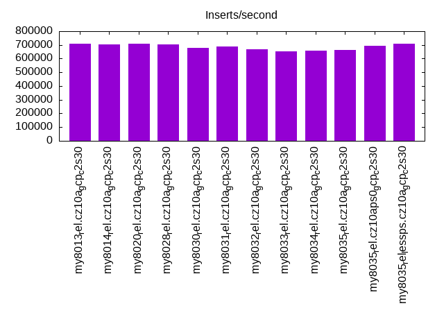
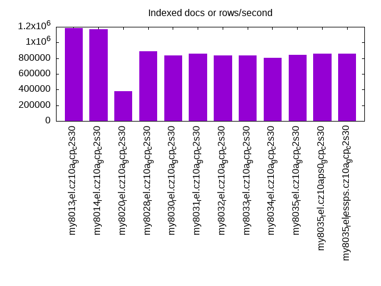
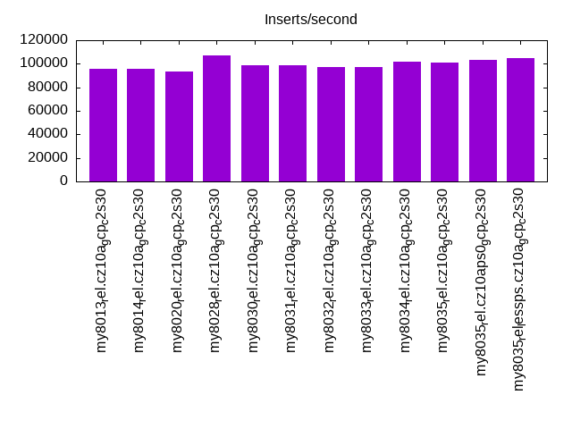
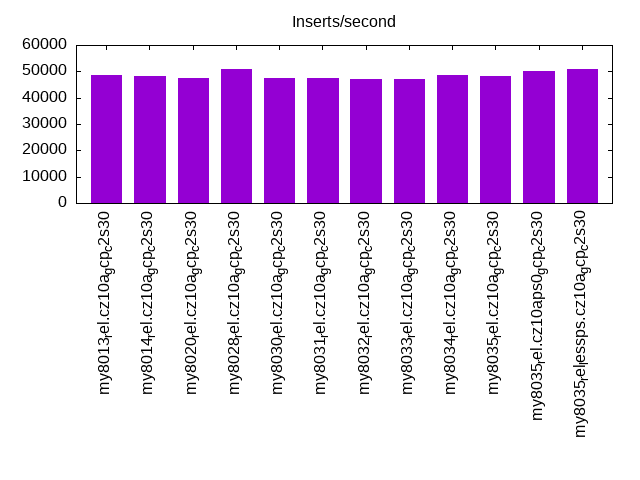
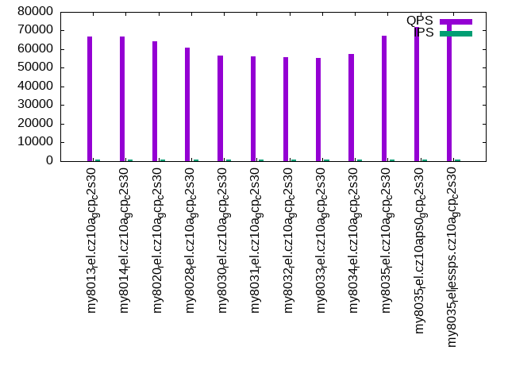
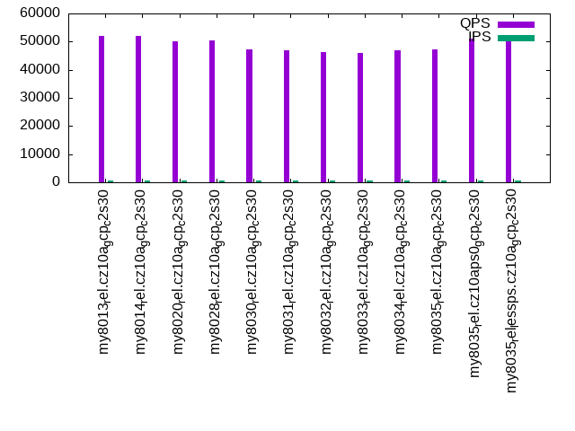
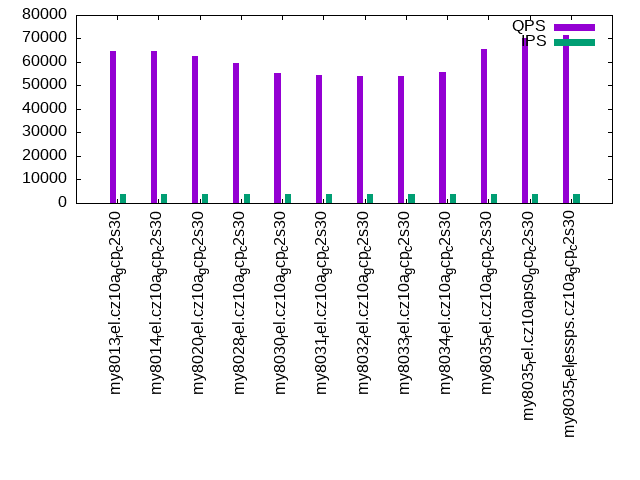
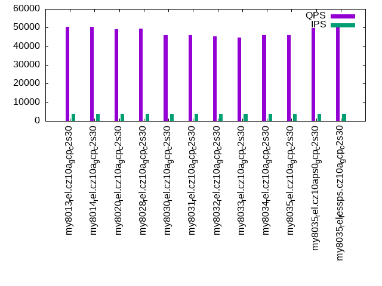
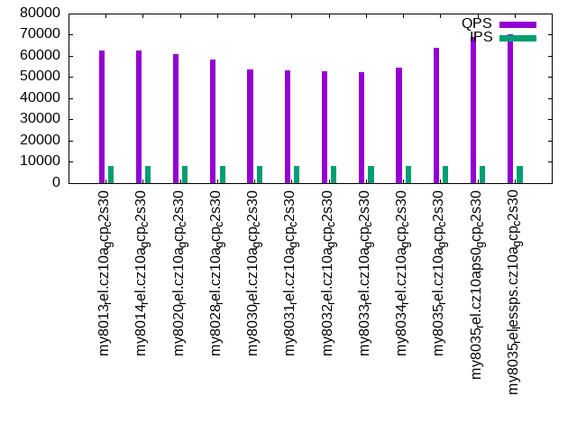
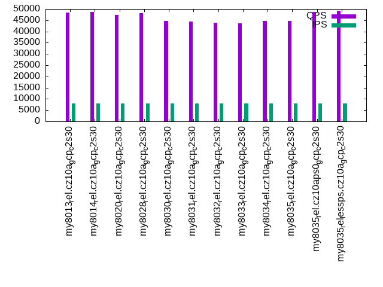

This is a report for the insert benchmark with 160M docs and 8 client(s). It is generated by scripts (bash, awk, sed) and Tufte might not be impressed. An overview of the insert benchmark is here and a short update is here. Below, by DBMS, I mean DBMS+version.config. An example is my8020.c10b40 where my means MySQL, 8020 is version 8.0.20 and c10b40 is the name for the configuration file.
The test server is a c2-standard-30 from GCP with 15 cores, hyperthreads disabled, Ubuntu 22.04 and XFS using SW RAID 0 over 4 local SSDs. The benchmark was run with 8 clients and there were 1, 2 or 3 connections per client. It uses 8 tables with a client per table. It loads 20M rows per table without secondary indexes, creates 3 secondary indexes per table, then inserts 50m+50m rows per table with a delete per insert to avoid growing the table. It then does 6 read+write tests for 1200s each that do queries as fast as possible with 100,100,500,500,1000,1000 inserts/s and the same for deletes/s per client concurrent with the queries. The database is cached in memory. Clients and the DBMS share one server. The per-database configs are in the per-database subdirectories here.
The tested DBMS are:
The numbers are inserts/s for l.i0, l.i1 and l.i2, indexed docs (or rows) /s for l.x and queries/s for qr100, qp100 thru qr1000, qp1000" The values are the average rate over the entire test for inserts (IPS) and queries (QPS). The range of values for IPS and QPS is split into 3 parts: bottom 25%, middle 50%, top 25%. Values in the bottom 25% have a red background, values in the top 25% have a green background and values in the middle have no color. A gray background is used for values that can be ignored because the DBMS did not sustain the target insert rate. Red backgrounds are not used when the minimum value is within 80% of the max value.
| dbms | l.i0 | l.x | l.i1 | l.i2 | qr100 | qp100 | qr500 | qp500 | qr1000 | qp1000 |
|---|---|---|---|---|---|---|---|---|---|---|
| my8013_rel.cz10a_gcp_c2s30 | 707965 | 1185186 | 95636 | 48485 | 66893 | 51878 | 64577 | 50268 | 62649 | 48453 |
| my8014_rel.cz10a_gcp_c2s30 | 701754 | 1167884 | 95323 | 48222 | 66940 | 52134 | 64625 | 50422 | 62490 | 48768 |
| my8020_rel.cz10a_gcp_c2s30 | 707965 | 377359 | 93240 | 47534 | 64310 | 50150 | 62553 | 49033 | 60754 | 47341 |
| my8028_rel.cz10a_gcp_c2s30 | 704846 | 888889 | 107418 | 50955 | 61014 | 50558 | 59428 | 49344 | 58150 | 48072 |
| my8030_rel.cz10a_gcp_c2s30 | 677966 | 833334 | 98401 | 47619 | 56701 | 47110 | 55226 | 45987 | 53640 | 44756 |
| my8031_rel.cz10a_gcp_c2s30 | 686695 | 855616 | 98765 | 47647 | 56122 | 46949 | 54555 | 45865 | 53315 | 44492 |
| my8032_rel.cz10a_gcp_c2s30 | 669456 | 833334 | 97324 | 47198 | 55909 | 46352 | 54167 | 45206 | 52698 | 43972 |
| my8033_rel.cz10a_gcp_c2s30 | 653061 | 837697 | 96999 | 46948 | 55496 | 45821 | 53918 | 44745 | 52379 | 43527 |
| my8034_rel.cz10a_gcp_c2s30 | 658436 | 808081 | 101814 | 48426 | 57263 | 47056 | 55650 | 45898 | 54283 | 44675 |
| my8035_rel.cz10a_gcp_c2s30 | 663900 | 846561 | 101298 | 48368 | 67292 | 47245 | 65703 | 45944 | 63901 | 44728 |
| my8035_rel.cz10aps0_gcp_c2s30 | 695652 | 860216 | 103126 | 50251 | 72102 | 51133 | 70334 | 49655 | 68923 | 48570 |
| my8035_rel_lessps.cz10a_gcp_c2s30 | 707965 | 855616 | 104439 | 50858 | 73410 | 51818 | 71616 | 50403 | 70195 | 49318 |
This table has relative throughput, throughput for the DBMS relative to the DBMS in the first line, using the absolute throughput from the previous table. Values less than 0.95 have a yellow background. Values greater than 1.05 have a blue background.
| dbms | l.i0 | l.x | l.i1 | l.i2 | qr100 | qp100 | qr500 | qp500 | qr1000 | qp1000 |
|---|---|---|---|---|---|---|---|---|---|---|
| my8013_rel.cz10a_gcp_c2s30 | 1.00 | 1.00 | 1.00 | 1.00 | 1.00 | 1.00 | 1.00 | 1.00 | 1.00 | 1.00 |
| my8014_rel.cz10a_gcp_c2s30 | 0.99 | 0.99 | 1.00 | 0.99 | 1.00 | 1.00 | 1.00 | 1.00 | 1.00 | 1.01 |
| my8020_rel.cz10a_gcp_c2s30 | 1.00 | 0.32 | 0.97 | 0.98 | 0.96 | 0.97 | 0.97 | 0.98 | 0.97 | 0.98 |
| my8028_rel.cz10a_gcp_c2s30 | 1.00 | 0.75 | 1.12 | 1.05 | 0.91 | 0.97 | 0.92 | 0.98 | 0.93 | 0.99 |
| my8030_rel.cz10a_gcp_c2s30 | 0.96 | 0.70 | 1.03 | 0.98 | 0.85 | 0.91 | 0.86 | 0.91 | 0.86 | 0.92 |
| my8031_rel.cz10a_gcp_c2s30 | 0.97 | 0.72 | 1.03 | 0.98 | 0.84 | 0.90 | 0.84 | 0.91 | 0.85 | 0.92 |
| my8032_rel.cz10a_gcp_c2s30 | 0.95 | 0.70 | 1.02 | 0.97 | 0.84 | 0.89 | 0.84 | 0.90 | 0.84 | 0.91 |
| my8033_rel.cz10a_gcp_c2s30 | 0.92 | 0.71 | 1.01 | 0.97 | 0.83 | 0.88 | 0.83 | 0.89 | 0.84 | 0.90 |
| my8034_rel.cz10a_gcp_c2s30 | 0.93 | 0.68 | 1.06 | 1.00 | 0.86 | 0.91 | 0.86 | 0.91 | 0.87 | 0.92 |
| my8035_rel.cz10a_gcp_c2s30 | 0.94 | 0.71 | 1.06 | 1.00 | 1.01 | 0.91 | 1.02 | 0.91 | 1.02 | 0.92 |
| my8035_rel.cz10aps0_gcp_c2s30 | 0.98 | 0.73 | 1.08 | 1.04 | 1.08 | 0.99 | 1.09 | 0.99 | 1.10 | 1.00 |
| my8035_rel_lessps.cz10a_gcp_c2s30 | 1.00 | 0.72 | 1.09 | 1.05 | 1.10 | 1.00 | 1.11 | 1.00 | 1.12 | 1.02 |
This lists the average rate of inserts/s for the tests that do inserts concurrent with queries. For such tests the query rate is listed in the table above. The read+write tests are setup so that the insert rate should match the target rate every second. Cells that are not at least 95% of the target have a red background to indicate a failure to satisfy the target.
| dbms | qr100.L1 | qp100.L2 | qr500.L3 | qp500.L4 | qr1000.L5 | qp1000.L6 |
|---|---|---|---|---|---|---|
| my8013_rel.cz10a_gcp_c2s30 | 794 | 794 | 3967 | 3970 | 7947 | 7947 |
| my8014_rel.cz10a_gcp_c2s30 | 794 | 793 | 3970 | 3970 | 7940 | 7940 |
| my8020_rel.cz10a_gcp_c2s30 | 794 | 794 | 3967 | 3970 | 7947 | 7947 |
| my8028_rel.cz10a_gcp_c2s30 | 794 | 794 | 3967 | 3967 | 7947 | 7947 |
| my8030_rel.cz10a_gcp_c2s30 | 794 | 794 | 3967 | 3967 | 7947 | 7947 |
| my8031_rel.cz10a_gcp_c2s30 | 793 | 794 | 3970 | 3970 | 7947 | 7947 |
| my8032_rel.cz10a_gcp_c2s30 | 794 | 793 | 3970 | 3970 | 7947 | 7947 |
| my8033_rel.cz10a_gcp_c2s30 | 794 | 793 | 3967 | 3970 | 7947 | 7947 |
| my8034_rel.cz10a_gcp_c2s30 | 794 | 794 | 3970 | 3967 | 7940 | 7940 |
| my8035_rel.cz10a_gcp_c2s30 | 794 | 794 | 3970 | 3970 | 7940 | 7940 |
| my8035_rel.cz10aps0_gcp_c2s30 | 793 | 794 | 3970 | 3970 | 7947 | 7947 |
| my8035_rel_lessps.cz10a_gcp_c2s30 | 794 | 794 | 3967 | 3967 | 7940 | 7947 |
| target | 800 | 800 | 4000 | 4000 | 8000 | 8000 |
l.i0: load without secondary indexes. Graphs for performance per 1-second interval are here.
Average throughput:
Insert response time histogram: each cell has the percentage of responses that take <= the time in the header and max is the max response time in seconds. For the max column values in the top 25% of the range have a red background and in the bottom 25% of the range have a green background. The red background is not used when the min value is within 80% of the max value.
| dbms | 256us | 1ms | 4ms | 16ms | 64ms | 256ms | 1s | 4s | 16s | gt | max |
|---|---|---|---|---|---|---|---|---|---|---|---|
| my8013_rel.cz10a_gcp_c2s30 | 79.485 | 20.413 | 0.060 | 0.026 | 0.015 | 0.244 | |||||
| my8014_rel.cz10a_gcp_c2s30 | 79.055 | 20.837 | 0.068 | 0.024 | 0.015 | 0.001 | 0.259 | ||||
| my8020_rel.cz10a_gcp_c2s30 | 79.859 | 20.055 | 0.046 | 0.023 | 0.015 | nonzero | 0.273 | ||||
| my8028_rel.cz10a_gcp_c2s30 | 75.333 | 24.592 | 0.045 | 0.015 | 0.015 | 0.246 | |||||
| my8030_rel.cz10a_gcp_c2s30 | 32.320 | 67.592 | 0.048 | 0.025 | 0.013 | 0.002 | 0.283 | ||||
| my8031_rel.cz10a_gcp_c2s30 | 47.726 | 52.193 | 0.045 | 0.022 | 0.014 | 0.001 | 0.269 | ||||
| my8032_rel.cz10a_gcp_c2s30 | 13.344 | 86.579 | 0.038 | 0.023 | 0.015 | 0.244 | |||||
| my8033_rel.cz10a_gcp_c2s30 | 4.507 | 95.407 | 0.042 | 0.028 | 0.015 | nonzero | 0.284 | ||||
| my8034_rel.cz10a_gcp_c2s30 | 8.612 | 91.303 | 0.045 | 0.025 | 0.015 | 0.001 | 0.262 | ||||
| my8035_rel.cz10a_gcp_c2s30 | 11.411 | 88.506 | 0.047 | 0.021 | 0.015 | nonzero | 0.271 | ||||
| my8035_rel.cz10aps0_gcp_c2s30 | 62.960 | 36.957 | 0.049 | 0.018 | 0.014 | 0.001 | 0.281 | ||||
| my8035_rel_lessps.cz10a_gcp_c2s30 | 77.724 | 22.201 | 0.048 | 0.013 | 0.014 | 0.241 |
Performance metrics for the DBMS listed above. Some are normalized by throughput, others are not. Legend for results is here.
ips qps rps rmbps wps wmbps rpq rkbpq wpi wkbpi csps cpups cspq cpupq dbgb1 dbgb2 rss maxop p50 p99 tag 707965 0 0 0.0 1822.3 157.8 0.000 0.000 0.003 0.228 190885 76.4 0.270 16 10.6 75.1 17.4 0.244 95797 72920 my8013_rel.cz10a_gcp_c2s30 701754 0 0 0.0 1849.0 155.7 0.000 0.000 0.003 0.227 185072 76.4 0.264 16 10.6 75.1 17.4 0.259 96228 74919 my8014_rel.cz10a_gcp_c2s30 707965 0 0 0.0 1950.3 159.2 0.000 0.000 0.003 0.230 231396 75.3 0.327 16 10.6 75.1 17.3 0.273 96795 74419 my8020_rel.cz10a_gcp_c2s30 704846 0 0 0.0 1935.7 155.3 0.000 0.000 0.003 0.226 246981 75.1 0.350 16 10.6 75.1 17.2 0.246 96196 73745 my8028_rel.cz10a_gcp_c2s30 677966 0 0 0.0 1800.7 146.9 0.000 0.000 0.003 0.222 237231 74.6 0.350 17 10.6 75.1 18.1 0.283 92900 68525 my8030_rel.cz10a_gcp_c2s30 686695 0 0 0.0 1800.0 149.4 0.000 0.000 0.003 0.223 241571 75.3 0.352 16 10.6 75.1 17.0 0.269 93998 73121 my8031_rel.cz10a_gcp_c2s30 669456 0 0 0.0 1751.8 143.9 0.000 0.000 0.003 0.220 233626 75.2 0.349 17 10.6 75.1 18.0 0.244 91101 72047 my8032_rel.cz10a_gcp_c2s30 653061 0 0 0.0 1756.0 139.0 0.000 0.000 0.003 0.218 224674 74.3 0.344 17 10.6 75.1 17.8 0.284 88804 69352 my8033_rel.cz10a_gcp_c2s30 658436 0 0 0.0 1959.4 151.6 0.000 0.000 0.003 0.236 228038 74.7 0.346 17 10.6 75.1 17.9 0.262 89703 67926 my8034_rel.cz10a_gcp_c2s30 663900 0 0 0.0 1974.8 148.4 0.000 0.000 0.003 0.229 229510 74.5 0.346 17 10.6 75.1 18.0 0.271 90103 70024 my8035_rel.cz10a_gcp_c2s30 695652 0 0 0.0 2002.1 155.5 0.000 0.000 0.003 0.229 245877 75.7 0.353 16 10.6 75.1 16.9 0.281 95197 75419 my8035_rel.cz10aps0_gcp_c2s30 707965 0 0 0.0 2043.5 159.4 0.000 0.000 0.003 0.231 244204 75.3 0.345 16 10.6 75.1 16.2 0.241 97492 76218 my8035_rel_lessps.cz10a_gcp_c2s30
l.x: create secondary indexes.
Average throughput:
Performance metrics for the DBMS listed above. Some are normalized by throughput, others are not. Legend for results is here.
ips qps rps rmbps wps wmbps rpq rkbpq wpi wkbpi csps cpups cspq cpupq dbgb1 dbgb2 rss maxop p50 p99 tag 1185186 0 0 0.0 12991.0 1100.9 0.000 0.000 0.011 0.951 57718 40.3 0.049 5 24.2 88.8 26.7 0.002 NA NA my8013_rel.cz10a_gcp_c2s30 1167884 0 0 0.0 12675.2 1090.2 0.000 0.000 0.011 0.956 48332 38.5 0.041 5 24.2 88.8 26.6 0.002 NA NA my8014_rel.cz10a_gcp_c2s30 377359 0 3 0.1 4663.6 337.6 0.000 0.000 0.012 0.916 109335 41.6 0.290 17 24.2 88.8 22.1 0.002 NA NA my8020_rel.cz10a_gcp_c2s30 888889 0 4547 282.2 19232.2 930.4 0.005 0.325 0.022 1.072 107892 77.2 0.121 13 24.2 88.8 27.4 0.002 NA NA my8028_rel.cz10a_gcp_c2s30 833334 0 4306 267.3 18196.0 881.6 0.005 0.328 0.022 1.083 113332 81.4 0.136 15 24.2 88.8 27.8 0.003 NA NA my8030_rel.cz10a_gcp_c2s30 855616 0 4424 274.5 18655.9 905.5 0.005 0.329 0.022 1.084 91967 79.9 0.107 14 24.2 88.8 26.6 0.002 NA NA my8031_rel.cz10a_gcp_c2s30 833334 0 4301 267.2 17950.3 875.6 0.005 0.328 0.022 1.076 123176 84.7 0.148 15 24.2 88.8 28.5 0.003 NA NA my8032_rel.cz10a_gcp_c2s30 837697 0 4304 267.2 18124.6 880.6 0.005 0.327 0.022 1.076 97960 83.5 0.117 15 24.2 88.8 27.4 0.003 NA NA my8033_rel.cz10a_gcp_c2s30 808081 0 4193 260.4 17468.6 855.0 0.005 0.330 0.022 1.083 96665 85.1 0.120 16 24.2 88.8 28.8 0.003 NA NA my8034_rel.cz10a_gcp_c2s30 846561 0 4423 274.6 18451.2 903.1 0.005 0.332 0.022 1.092 77933 83.9 0.092 15 24.2 88.8 27.4 0.002 NA NA my8035_rel.cz10a_gcp_c2s30 860216 0 4422 274.5 18844.4 909.1 0.005 0.327 0.022 1.082 94808 66.9 0.110 12 24.2 88.8 28.0 0.002 NA NA my8035_rel.cz10aps0_gcp_c2s30 855616 0 4423 274.5 18763.5 908.2 0.005 0.329 0.022 1.087 79136 64.7 0.092 11 24.2 88.8 26.4 0.002 NA NA my8035_rel_lessps.cz10a_gcp_c2s30
l.i1: continue load after secondary indexes created with 50 inserts per transaction. Graphs for performance per 1-second interval are here.
Average throughput:
Insert response time histogram: each cell has the percentage of responses that take <= the time in the header and max is the max response time in seconds. For the max column values in the top 25% of the range have a red background and in the bottom 25% of the range have a green background. The red background is not used when the min value is within 80% of the max value.
| dbms | 256us | 1ms | 4ms | 16ms | 64ms | 256ms | 1s | 4s | 16s | gt | max |
|---|---|---|---|---|---|---|---|---|---|---|---|
| my8013_rel.cz10a_gcp_c2s30 | 57.917 | 41.781 | 0.286 | 0.016 | nonzero | 0.360 | |||||
| my8014_rel.cz10a_gcp_c2s30 | 57.440 | 42.267 | 0.277 | 0.016 | 0.252 | ||||||
| my8020_rel.cz10a_gcp_c2s30 | 54.657 | 45.069 | 0.253 | 0.018 | 0.003 | 0.373 | |||||
| my8028_rel.cz10a_gcp_c2s30 | 70.364 | 29.418 | 0.198 | 0.014 | 0.006 | 0.398 | |||||
| my8030_rel.cz10a_gcp_c2s30 | 61.317 | 38.460 | 0.200 | 0.019 | 0.005 | 0.463 | |||||
| my8031_rel.cz10a_gcp_c2s30 | 61.804 | 37.965 | 0.206 | 0.020 | 0.004 | 0.445 | |||||
| my8032_rel.cz10a_gcp_c2s30 | 60.158 | 39.599 | 0.217 | 0.022 | 0.003 | 0.409 | |||||
| my8033_rel.cz10a_gcp_c2s30 | 59.619 | 40.147 | 0.211 | 0.021 | 0.002 | 0.426 | |||||
| my8034_rel.cz10a_gcp_c2s30 | 65.315 | 34.451 | 0.209 | 0.021 | 0.004 | 0.418 | |||||
| my8035_rel.cz10a_gcp_c2s30 | 64.797 | 34.968 | 0.211 | 0.022 | 0.003 | 0.441 | |||||
| my8035_rel.cz10aps0_gcp_c2s30 | 66.742 | 33.022 | 0.210 | 0.020 | 0.005 | 0.416 | |||||
| my8035_rel_lessps.cz10a_gcp_c2s30 | 67.919 | 31.850 | 0.206 | 0.022 | 0.003 | 0.392 |
Delete response time histogram: each cell has the percentage of responses that take <= the time in the header and max is the max response time in seconds. For the max column values in the top 25% of the range have a red background and in the bottom 25% of the range have a green background. The red background is not used when the min value is within 80% of the max value.
| dbms | 256us | 1ms | 4ms | 16ms | 64ms | 256ms | 1s | 4s | 16s | gt | max |
|---|---|---|---|---|---|---|---|---|---|---|---|
| my8013_rel.cz10a_gcp_c2s30 | 73.446 | 26.352 | 0.189 | 0.013 | nonzero | 0.269 | |||||
| my8014_rel.cz10a_gcp_c2s30 | nonzero | 72.767 | 27.033 | 0.187 | 0.013 | 0.252 | |||||
| my8020_rel.cz10a_gcp_c2s30 | 70.768 | 29.057 | 0.161 | 0.012 | 0.003 | 0.375 | |||||
| my8028_rel.cz10a_gcp_c2s30 | 81.318 | 18.538 | 0.129 | 0.010 | 0.005 | 0.396 | |||||
| my8030_rel.cz10a_gcp_c2s30 | 75.794 | 24.072 | 0.117 | 0.012 | 0.005 | 0.463 | |||||
| my8031_rel.cz10a_gcp_c2s30 | 76.566 | 23.303 | 0.114 | 0.014 | 0.004 | 0.440 | |||||
| my8032_rel.cz10a_gcp_c2s30 | 75.722 | 24.137 | 0.123 | 0.015 | 0.003 | 0.412 | |||||
| my8033_rel.cz10a_gcp_c2s30 | 75.273 | 24.594 | 0.117 | 0.014 | 0.002 | 0.400 | |||||
| my8034_rel.cz10a_gcp_c2s30 | 77.502 | 22.357 | 0.124 | 0.015 | 0.003 | 0.421 | |||||
| my8035_rel.cz10a_gcp_c2s30 | 77.278 | 22.581 | 0.124 | 0.015 | 0.002 | 0.421 | |||||
| my8035_rel.cz10aps0_gcp_c2s30 | 79.359 | 20.500 | 0.123 | 0.013 | 0.004 | 0.418 | |||||
| my8035_rel_lessps.cz10a_gcp_c2s30 | 79.591 | 20.269 | 0.123 | 0.016 | 0.002 | 0.388 |
Performance metrics for the DBMS listed above. Some are normalized by throughput, others are not. Legend for results is here.
ips qps rps rmbps wps wmbps rpq rkbpq wpi wkbpi csps cpups cspq cpupq dbgb1 dbgb2 rss maxop p50 p99 tag 95636 0 0 0.0 6653.7 261.6 0.000 0.000 0.070 2.801 175453 84.5 1.835 133 35.9 100.8 43.5 0.360 12148 9041 my8013_rel.cz10a_gcp_c2s30 95323 0 0 0.0 6686.2 262.3 0.000 0.000 0.070 2.818 183779 84.8 1.928 133 35.8 100.7 43.4 0.252 12088 8990 my8014_rel.cz10a_gcp_c2s30 93240 0 225 3.5 7081.2 257.4 0.002 0.039 0.076 2.827 163755 84.9 1.756 137 34.9 99.8 42.5 0.373 11987 7891 my8020_rel.cz10a_gcp_c2s30 107418 0 260 4.1 7769.6 286.5 0.002 0.039 0.072 2.731 172735 84.4 1.608 118 34.3 99.2 41.8 0.398 13882 9144 my8028_rel.cz10a_gcp_c2s30 98401 0 238 3.7 8999.9 335.8 0.002 0.039 0.091 3.495 175201 85.1 1.780 130 34.3 99.1 41.9 0.463 12736 7844 my8030_rel.cz10a_gcp_c2s30 98765 0 238 3.7 9034.2 337.0 0.002 0.039 0.091 3.494 176143 85.0 1.783 129 34.5 99.4 42.1 0.445 12786 7642 my8031_rel.cz10a_gcp_c2s30 97324 0 235 3.7 8944.5 333.3 0.002 0.039 0.092 3.507 174300 85.0 1.791 131 34.5 99.4 42.1 0.409 12586 7442 my8032_rel.cz10a_gcp_c2s30 96999 0 234 3.7 8907.0 332.5 0.002 0.039 0.092 3.510 172497 85.3 1.778 132 34.9 99.8 42.5 0.426 12491 7841 my8033_rel.cz10a_gcp_c2s30 101814 0 246 3.8 9116.1 343.8 0.002 0.039 0.090 3.458 178862 84.9 1.757 125 33.1 97.8 40.6 0.418 13185 6993 my8034_rel.cz10a_gcp_c2s30 101298 0 245 3.8 9105.0 342.7 0.002 0.039 0.090 3.464 177421 84.9 1.751 126 33.5 98.2 41.0 0.441 13091 6987 my8035_rel.cz10a_gcp_c2s30 103126 0 249 3.9 9189.9 346.3 0.002 0.039 0.089 3.438 181142 84.7 1.757 123 33.2 97.9 40.5 0.416 13338 6945 my8035_rel.cz10aps0_gcp_c2s30 104439 0 252 3.9 9302.7 351.5 0.002 0.039 0.089 3.446 183154 84.5 1.754 121 33.6 98.4 40.0 0.392 13539 6849 my8035_rel_lessps.cz10a_gcp_c2s30
l.i2: continue load after secondary indexes created with 5 inserts per transaction. Graphs for performance per 1-second interval are here.
Average throughput:
Insert response time histogram: each cell has the percentage of responses that take <= the time in the header and max is the max response time in seconds. For the max column values in the top 25% of the range have a red background and in the bottom 25% of the range have a green background. The red background is not used when the min value is within 80% of the max value.
| dbms | 256us | 1ms | 4ms | 16ms | 64ms | 256ms | 1s | 4s | 16s | gt | max |
|---|---|---|---|---|---|---|---|---|---|---|---|
| my8013_rel.cz10a_gcp_c2s30 | 0.073 | 79.445 | 20.399 | 0.079 | 0.002 | 0.003 | 0.224 | ||||
| my8014_rel.cz10a_gcp_c2s30 | 0.065 | 79.278 | 20.567 | 0.085 | 0.002 | 0.003 | 0.236 | ||||
| my8020_rel.cz10a_gcp_c2s30 | 0.095 | 77.202 | 22.658 | 0.041 | 0.001 | 0.002 | 0.001 | 0.295 | |||
| my8028_rel.cz10a_gcp_c2s30 | 0.112 | 84.539 | 15.217 | 0.126 | 0.002 | 0.003 | nonzero | 0.333 | |||
| my8030_rel.cz10a_gcp_c2s30 | 0.069 | 79.545 | 20.208 | 0.165 | 0.009 | 0.002 | 0.001 | 0.321 | |||
| my8031_rel.cz10a_gcp_c2s30 | 0.026 | 79.572 | 20.233 | 0.158 | 0.008 | 0.002 | 0.001 | 0.339 | |||
| my8032_rel.cz10a_gcp_c2s30 | 0.037 | 79.137 | 20.649 | 0.164 | 0.010 | 0.002 | 0.001 | 0.309 | |||
| my8033_rel.cz10a_gcp_c2s30 | 0.022 | 78.536 | 21.258 | 0.172 | 0.009 | 0.003 | nonzero | 0.310 | |||
| my8034_rel.cz10a_gcp_c2s30 | 0.085 | 81.696 | 18.048 | 0.158 | 0.009 | 0.003 | 0.001 | 0.329 | |||
| my8035_rel.cz10a_gcp_c2s30 | 0.046 | 81.692 | 18.084 | 0.164 | 0.011 | 0.002 | 0.001 | 0.348 | |||
| my8035_rel.cz10aps0_gcp_c2s30 | 0.084 | 83.068 | 16.705 | 0.131 | 0.010 | 0.003 | 0.001 | 0.320 | |||
| my8035_rel_lessps.cz10a_gcp_c2s30 | 0.081 | 83.861 | 15.915 | 0.130 | 0.010 | 0.003 | nonzero | 0.318 |
Delete response time histogram: each cell has the percentage of responses that take <= the time in the header and max is the max response time in seconds. For the max column values in the top 25% of the range have a red background and in the bottom 25% of the range have a green background. The red background is not used when the min value is within 80% of the max value.
| dbms | 256us | 1ms | 4ms | 16ms | 64ms | 256ms | 1s | 4s | 16s | gt | max |
|---|---|---|---|---|---|---|---|---|---|---|---|
| my8013_rel.cz10a_gcp_c2s30 | 0.086 | 81.882 | 17.955 | 0.073 | 0.002 | 0.003 | 0.224 | ||||
| my8014_rel.cz10a_gcp_c2s30 | 0.079 | 81.626 | 18.210 | 0.080 | 0.001 | 0.003 | 0.236 | ||||
| my8020_rel.cz10a_gcp_c2s30 | 0.091 | 79.387 | 20.478 | 0.040 | 0.001 | 0.002 | 0.001 | 0.293 | |||
| my8028_rel.cz10a_gcp_c2s30 | 0.126 | 85.920 | 13.823 | 0.126 | 0.002 | 0.003 | nonzero | 0.331 | |||
| my8030_rel.cz10a_gcp_c2s30 | 0.075 | 81.505 | 18.242 | 0.166 | 0.009 | 0.002 | nonzero | 0.322 | |||
| my8031_rel.cz10a_gcp_c2s30 | 0.029 | 81.572 | 18.230 | 0.157 | 0.008 | 0.002 | 0.001 | 0.336 | |||
| my8032_rel.cz10a_gcp_c2s30 | 0.043 | 81.088 | 18.693 | 0.164 | 0.009 | 0.002 | 0.001 | 0.312 | |||
| my8033_rel.cz10a_gcp_c2s30 | 0.023 | 80.514 | 19.281 | 0.171 | 0.009 | 0.003 | nonzero | 0.309 | |||
| my8034_rel.cz10a_gcp_c2s30 | 0.096 | 83.434 | 16.301 | 0.157 | 0.009 | 0.003 | 0.001 | 0.330 | |||
| my8035_rel.cz10a_gcp_c2s30 | 0.054 | 83.485 | 16.284 | 0.163 | 0.011 | 0.002 | 0.001 | 0.346 | |||
| my8035_rel.cz10aps0_gcp_c2s30 | 0.101 | 84.919 | 14.837 | 0.130 | 0.009 | 0.003 | nonzero | 0.321 | |||
| my8035_rel_lessps.cz10a_gcp_c2s30 | 0.097 | 85.483 | 14.277 | 0.129 | 0.010 | 0.003 | nonzero | 0.317 |
Performance metrics for the DBMS listed above. Some are normalized by throughput, others are not. Legend for results is here.
ips qps rps rmbps wps wmbps rpq rkbpq wpi wkbpi csps cpups cspq cpupq dbgb1 dbgb2 rss maxop p50 p99 tag 48485 0 0 0.0 4040.8 151.6 0.000 0.000 0.083 3.203 247368 78.0 5.102 241 35.9 100.8 43.6 0.224 6088 5028 my8013_rel.cz10a_gcp_c2s30 48222 0 0 0.0 4027.8 151.8 0.000 0.000 0.084 3.223 248160 78.0 5.146 243 35.8 100.7 43.5 0.236 6063 4992 my8014_rel.cz10a_gcp_c2s30 47534 0 0 0.0 4247.9 146.6 0.000 0.000 0.089 3.159 246736 78.3 5.191 247 34.9 99.8 42.5 0.295 5971 4805 my8020_rel.cz10a_gcp_c2s30 50955 0 0 0.0 4439.8 154.5 0.000 0.000 0.087 3.105 239716 78.3 4.704 230 34.3 99.2 41.9 0.333 6397 5169 my8028_rel.cz10a_gcp_c2s30 47619 0 0 0.0 5106.6 177.6 0.000 0.000 0.107 3.819 233344 78.0 4.900 246 34.3 99.1 41.9 0.321 5994 4828 my8030_rel.cz10a_gcp_c2s30 47647 0 0 0.0 5116.3 178.7 0.000 0.000 0.107 3.841 234498 78.3 4.922 246 34.5 99.4 42.1 0.339 5998 4850 my8031_rel.cz10a_gcp_c2s30 47198 0 0 0.0 5076.7 177.0 0.000 0.000 0.108 3.841 231766 78.0 4.911 248 34.5 99.4 42.1 0.309 5928 4820 my8032_rel.cz10a_gcp_c2s30 46948 0 0 0.0 5059.5 176.7 0.000 0.000 0.108 3.855 230549 78.3 4.911 250 34.9 99.8 42.5 0.310 5899 4890 my8033_rel.cz10a_gcp_c2s30 48426 0 0 0.0 5154.7 180.7 0.000 0.000 0.106 3.820 234147 78.2 4.835 242 33.1 97.8 40.6 0.329 6103 5005 my8034_rel.cz10a_gcp_c2s30 48368 0 0 0.0 5152.9 180.0 0.000 0.000 0.107 3.811 233138 78.2 4.820 243 33.5 98.2 41.0 0.348 6073 4947 my8035_rel.cz10a_gcp_c2s30 50251 0 0 0.0 5275.0 184.9 0.000 0.000 0.105 3.768 244388 78.0 4.863 233 33.2 97.9 40.5 0.320 6318 5164 my8035_rel.cz10aps0_gcp_c2s30 50858 0 0 0.0 5317.7 186.5 0.000 0.000 0.105 3.754 246301 78.1 4.843 230 33.6 98.4 40.0 0.318 6393 5244 my8035_rel_lessps.cz10a_gcp_c2s30
qr100.L1: range queries with 100 insert/s per client. Graphs for performance per 1-second interval are here.
Average throughput:
Query response time histogram: each cell has the percentage of responses that take <= the time in the header and max is the max response time in seconds. For max values in the top 25% of the range have a red background and in the bottom 25% of the range have a green background. The red background is not used when the min value is within 80% of the max value.
| dbms | 256us | 1ms | 4ms | 16ms | 64ms | 256ms | 1s | 4s | 16s | gt | max |
|---|---|---|---|---|---|---|---|---|---|---|---|
| my8013_rel.cz10a_gcp_c2s30 | 99.971 | 0.026 | 0.003 | nonzero | nonzero | 0.019 | |||||
| my8014_rel.cz10a_gcp_c2s30 | 99.971 | 0.026 | 0.002 | nonzero | 0.009 | ||||||
| my8020_rel.cz10a_gcp_c2s30 | 99.964 | 0.034 | 0.002 | nonzero | 0.009 | ||||||
| my8028_rel.cz10a_gcp_c2s30 | 99.957 | 0.042 | 0.001 | nonzero | 0.011 | ||||||
| my8030_rel.cz10a_gcp_c2s30 | 99.933 | 0.066 | 0.001 | nonzero | 0.011 | ||||||
| my8031_rel.cz10a_gcp_c2s30 | 99.920 | 0.078 | 0.001 | nonzero | 0.011 | ||||||
| my8032_rel.cz10a_gcp_c2s30 | 99.929 | 0.070 | 0.001 | nonzero | 0.012 | ||||||
| my8033_rel.cz10a_gcp_c2s30 | 99.915 | 0.083 | 0.001 | nonzero | 0.011 | ||||||
| my8034_rel.cz10a_gcp_c2s30 | 99.936 | 0.063 | 0.001 | nonzero | 0.010 | ||||||
| my8035_rel.cz10a_gcp_c2s30 | 99.972 | 0.027 | 0.001 | nonzero | 0.008 | ||||||
| my8035_rel.cz10aps0_gcp_c2s30 | 99.983 | 0.016 | 0.001 | nonzero | 0.006 | ||||||
| my8035_rel_lessps.cz10a_gcp_c2s30 | 99.984 | 0.015 | 0.001 | nonzero | 0.006 |
Insert response time histogram: each cell has the percentage of responses that take <= the time in the header and max is the max response time in seconds. For max values in the top 25% of the range have a red background and in the bottom 25% of the range have a green background. The red background is not used when the min value is within 80% of the max value.
| dbms | 256us | 1ms | 4ms | 16ms | 64ms | 256ms | 1s | 4s | 16s | gt | max |
|---|---|---|---|---|---|---|---|---|---|---|---|
| my8013_rel.cz10a_gcp_c2s30 | 93.422 | 6.578 | 0.015 | ||||||||
| my8014_rel.cz10a_gcp_c2s30 | 83.760 | 16.240 | 0.012 | ||||||||
| my8020_rel.cz10a_gcp_c2s30 | 82.203 | 17.792 | 0.005 | 0.016 | |||||||
| my8028_rel.cz10a_gcp_c2s30 | 94.484 | 5.516 | 0.013 | ||||||||
| my8030_rel.cz10a_gcp_c2s30 | 93.531 | 6.469 | 0.016 | ||||||||
| my8031_rel.cz10a_gcp_c2s30 | 94.969 | 5.031 | 0.015 | ||||||||
| my8032_rel.cz10a_gcp_c2s30 | 94.391 | 5.609 | 0.014 | ||||||||
| my8033_rel.cz10a_gcp_c2s30 | 95.354 | 4.646 | 0.013 | ||||||||
| my8034_rel.cz10a_gcp_c2s30 | 94.589 | 5.411 | 0.015 | ||||||||
| my8035_rel.cz10a_gcp_c2s30 | 95.104 | 4.896 | 0.010 | ||||||||
| my8035_rel.cz10aps0_gcp_c2s30 | 94.401 | 5.599 | 0.011 | ||||||||
| my8035_rel_lessps.cz10a_gcp_c2s30 | 95.542 | 4.458 | 0.012 |
Delete response time histogram: each cell has the percentage of responses that take <= the time in the header and max is the max response time in seconds. For max values in the top 25% of the range have a red background and in the bottom 25% of the range have a green background. The red background is not used when the min value is within 80% of the max value.
| dbms | 256us | 1ms | 4ms | 16ms | 64ms | 256ms | 1s | 4s | 16s | gt | max |
|---|---|---|---|---|---|---|---|---|---|---|---|
| my8013_rel.cz10a_gcp_c2s30 | 95.651 | 4.349 | 0.015 | ||||||||
| my8014_rel.cz10a_gcp_c2s30 | 89.578 | 10.422 | 0.012 | ||||||||
| my8020_rel.cz10a_gcp_c2s30 | 88.526 | 11.474 | 0.013 | ||||||||
| my8028_rel.cz10a_gcp_c2s30 | 96.573 | 3.427 | 0.012 | ||||||||
| my8030_rel.cz10a_gcp_c2s30 | 96.141 | 3.859 | 0.015 | ||||||||
| my8031_rel.cz10a_gcp_c2s30 | 96.745 | 3.255 | 0.014 | ||||||||
| my8032_rel.cz10a_gcp_c2s30 | 96.469 | 3.531 | 0.013 | ||||||||
| my8033_rel.cz10a_gcp_c2s30 | 97.167 | 2.833 | 0.013 | ||||||||
| my8034_rel.cz10a_gcp_c2s30 | 96.672 | 3.328 | 0.014 | ||||||||
| my8035_rel.cz10a_gcp_c2s30 | 97.099 | 2.901 | 0.009 | ||||||||
| my8035_rel.cz10aps0_gcp_c2s30 | 96.745 | 3.255 | 0.010 | ||||||||
| my8035_rel_lessps.cz10a_gcp_c2s30 | 97.234 | 2.766 | 0.010 |
Performance metrics for the DBMS listed above. Some are normalized by throughput, others are not. Legend for results is here.
ips qps rps rmbps wps wmbps rpq rkbpq wpi wkbpi csps cpups cspq cpupq dbgb1 dbgb2 rss maxop p50 p99 tag 794 66893 0 0.0 80.4 2.7 0.000 0.000 0.101 3.542 257091 54.4 3.843 122 35.9 100.8 43.6 0.019 8410 8314 my8013_rel.cz10a_gcp_c2s30 794 66940 0 0.0 71.1 2.5 0.000 0.000 0.090 3.178 256744 54.3 3.835 122 35.8 100.7 43.5 0.009 8423 8314 my8014_rel.cz10a_gcp_c2s30 794 64310 0 0.0 91.4 2.9 0.000 0.000 0.115 3.683 246907 54.4 3.839 127 34.9 99.8 42.6 0.009 8055 7959 my8020_rel.cz10a_gcp_c2s30 794 61014 0 0.0 148.2 4.4 0.000 0.000 0.187 5.628 234166 54.2 3.838 133 34.3 99.2 41.9 0.011 7642 7544 my8028_rel.cz10a_gcp_c2s30 794 56701 0 0.0 150.7 4.5 0.000 0.000 0.190 5.822 217958 54.2 3.844 143 34.3 99.1 41.9 0.011 7130 7032 my8030_rel.cz10a_gcp_c2s30 793 56122 0 0.0 173.7 5.1 0.000 0.000 0.219 6.633 215978 54.2 3.848 145 34.5 99.4 42.1 0.011 7051 6936 my8031_rel.cz10a_gcp_c2s30 794 55909 0 0.0 142.4 4.3 0.000 0.000 0.179 5.535 214909 54.3 3.844 146 34.5 99.4 42.1 0.012 7032 6923 my8032_rel.cz10a_gcp_c2s30 794 55496 0 0.0 159.5 4.8 0.000 0.000 0.201 6.128 213371 54.1 3.845 146 34.9 99.8 42.5 0.011 6955 6841 my8033_rel.cz10a_gcp_c2s30 794 57263 0 0.0 170.7 5.1 0.000 0.000 0.215 6.557 220138 54.0 3.844 141 33.1 97.8 40.6 0.010 7194 7083 my8034_rel.cz10a_gcp_c2s30 794 67292 0 0.0 154.0 4.6 0.000 0.000 0.194 5.936 258248 54.6 3.838 122 33.5 98.2 41.0 0.008 8455 8343 my8035_rel.cz10a_gcp_c2s30 793 72102 0 0.0 157.3 4.7 0.000 0.000 0.198 6.069 276725 54.0 3.838 112 33.2 97.9 40.5 0.006 9062 8934 my8035_rel.cz10aps0_gcp_c2s30 794 73410 0 0.0 162.1 4.8 0.000 0.000 0.204 6.242 281471 53.9 3.834 110 33.6 98.4 40.0 0.006 9238 9110 my8035_rel_lessps.cz10a_gcp_c2s30
qp100.L2: point queries with 100 insert/s per client. Graphs for performance per 1-second interval are here.
Average throughput:
Query response time histogram: each cell has the percentage of responses that take <= the time in the header and max is the max response time in seconds. For max values in the top 25% of the range have a red background and in the bottom 25% of the range have a green background. The red background is not used when the min value is within 80% of the max value.
| dbms | 256us | 1ms | 4ms | 16ms | 64ms | 256ms | 1s | 4s | 16s | gt | max |
|---|---|---|---|---|---|---|---|---|---|---|---|
| my8013_rel.cz10a_gcp_c2s30 | 99.880 | 0.117 | 0.003 | nonzero | nonzero | 0.018 | |||||
| my8014_rel.cz10a_gcp_c2s30 | 99.894 | 0.103 | 0.003 | nonzero | 0.010 | ||||||
| my8020_rel.cz10a_gcp_c2s30 | 99.835 | 0.162 | 0.003 | nonzero | 0.009 | ||||||
| my8028_rel.cz10a_gcp_c2s30 | 99.858 | 0.140 | 0.002 | nonzero | 0.008 | ||||||
| my8030_rel.cz10a_gcp_c2s30 | 99.713 | 0.286 | 0.001 | nonzero | 0.013 | ||||||
| my8031_rel.cz10a_gcp_c2s30 | 99.663 | 0.335 | 0.001 | nonzero | 0.011 | ||||||
| my8032_rel.cz10a_gcp_c2s30 | 99.670 | 0.328 | 0.001 | nonzero | 0.014 | ||||||
| my8033_rel.cz10a_gcp_c2s30 | 99.592 | 0.406 | 0.001 | nonzero | 0.008 | ||||||
| my8034_rel.cz10a_gcp_c2s30 | 99.698 | 0.300 | 0.001 | nonzero | 0.012 | ||||||
| my8035_rel.cz10a_gcp_c2s30 | 99.718 | 0.280 | 0.001 | nonzero | 0.010 | ||||||
| my8035_rel.cz10aps0_gcp_c2s30 | 99.887 | 0.112 | 0.001 | nonzero | 0.009 | ||||||
| my8035_rel_lessps.cz10a_gcp_c2s30 | 99.896 | 0.102 | 0.001 | nonzero | 0.010 |
Insert response time histogram: each cell has the percentage of responses that take <= the time in the header and max is the max response time in seconds. For max values in the top 25% of the range have a red background and in the bottom 25% of the range have a green background. The red background is not used when the min value is within 80% of the max value.
| dbms | 256us | 1ms | 4ms | 16ms | 64ms | 256ms | 1s | 4s | 16s | gt | max |
|---|---|---|---|---|---|---|---|---|---|---|---|
| my8013_rel.cz10a_gcp_c2s30 | 93.786 | 6.214 | 0.015 | ||||||||
| my8014_rel.cz10a_gcp_c2s30 | 83.370 | 16.630 | 0.015 | ||||||||
| my8020_rel.cz10a_gcp_c2s30 | 82.661 | 17.339 | 0.016 | ||||||||
| my8028_rel.cz10a_gcp_c2s30 | 95.005 | 4.995 | 0.011 | ||||||||
| my8030_rel.cz10a_gcp_c2s30 | 93.714 | 6.286 | 0.015 | ||||||||
| my8031_rel.cz10a_gcp_c2s30 | 94.490 | 5.510 | 0.014 | ||||||||
| my8032_rel.cz10a_gcp_c2s30 | 92.557 | 7.438 | 0.005 | 0.016 | |||||||
| my8033_rel.cz10a_gcp_c2s30 | 94.130 | 5.865 | 0.005 | 0.016 | |||||||
| my8034_rel.cz10a_gcp_c2s30 | 94.745 | 5.255 | 0.013 | ||||||||
| my8035_rel.cz10a_gcp_c2s30 | 93.729 | 6.266 | 0.005 | 0.017 | |||||||
| my8035_rel.cz10aps0_gcp_c2s30 | 95.411 | 4.589 | 0.012 | ||||||||
| my8035_rel_lessps.cz10a_gcp_c2s30 | 94.932 | 5.068 | 0.013 |
Delete response time histogram: each cell has the percentage of responses that take <= the time in the header and max is the max response time in seconds. For max values in the top 25% of the range have a red background and in the bottom 25% of the range have a green background. The red background is not used when the min value is within 80% of the max value.
| dbms | 256us | 1ms | 4ms | 16ms | 64ms | 256ms | 1s | 4s | 16s | gt | max |
|---|---|---|---|---|---|---|---|---|---|---|---|
| my8013_rel.cz10a_gcp_c2s30 | 95.995 | 4.005 | 0.016 | ||||||||
| my8014_rel.cz10a_gcp_c2s30 | 89.188 | 10.812 | 0.013 | ||||||||
| my8020_rel.cz10a_gcp_c2s30 | 88.714 | 11.286 | 0.013 | ||||||||
| my8028_rel.cz10a_gcp_c2s30 | 96.990 | 3.010 | 0.014 | ||||||||
| my8030_rel.cz10a_gcp_c2s30 | 96.198 | 3.802 | 0.015 | ||||||||
| my8031_rel.cz10a_gcp_c2s30 | 96.578 | 3.422 | 0.013 | ||||||||
| my8032_rel.cz10a_gcp_c2s30 | 95.677 | 4.318 | 0.005 | 0.016 | |||||||
| my8033_rel.cz10a_gcp_c2s30 | 96.510 | 3.490 | 0.016 | ||||||||
| my8034_rel.cz10a_gcp_c2s30 | 96.734 | 3.266 | 0.012 | ||||||||
| my8035_rel.cz10a_gcp_c2s30 | 96.323 | 3.677 | 0.016 | ||||||||
| my8035_rel.cz10aps0_gcp_c2s30 | 97.401 | 2.599 | 0.014 | ||||||||
| my8035_rel_lessps.cz10a_gcp_c2s30 | 97.146 | 2.854 | 0.012 |
Performance metrics for the DBMS listed above. Some are normalized by throughput, others are not. Legend for results is here.
ips qps rps rmbps wps wmbps rpq rkbpq wpi wkbpi csps cpups cspq cpupq dbgb1 dbgb2 rss maxop p50 p99 tag 794 51878 0 0.0 3.3 0.5 0.000 0.000 0.004 0.651 207831 54.3 4.006 157 35.9 100.8 43.6 0.018 6505 6441 my8013_rel.cz10a_gcp_c2s30 793 52134 0 0.0 3.3 0.5 0.000 0.000 0.004 0.662 208502 54.2 3.999 156 35.8 100.7 43.5 0.010 6585 6521 my8014_rel.cz10a_gcp_c2s30 794 50150 0 0.0 73.2 2.2 0.000 0.000 0.092 2.846 200888 54.2 4.006 162 34.9 99.8 42.6 0.009 6297 6249 my8020_rel.cz10a_gcp_c2s30 794 50558 0 0.0 64.2 2.1 0.000 0.000 0.081 2.661 202001 54.0 3.995 160 34.3 99.2 41.9 0.008 6379 6329 my8028_rel.cz10a_gcp_c2s30 794 47110 0 0.0 82.3 2.6 0.000 0.000 0.104 3.388 188621 53.6 4.004 171 34.3 99.1 41.9 0.013 5932 5897 my8030_rel.cz10a_gcp_c2s30 794 46949 0 0.0 80.0 2.6 0.000 0.000 0.101 3.309 188000 53.6 4.004 171 34.5 99.4 42.1 0.011 5913 5865 my8031_rel.cz10a_gcp_c2s30 793 46352 0 0.0 69.4 2.3 0.000 0.000 0.087 2.958 185727 53.7 4.007 174 34.5 99.4 42.1 0.014 5850 5802 my8032_rel.cz10a_gcp_c2s30 793 45821 0 0.0 82.0 2.6 0.000 0.000 0.103 3.400 183672 53.7 4.008 176 34.9 99.8 42.5 0.008 5754 5706 my8033_rel.cz10a_gcp_c2s30 794 47056 0 0.0 81.0 2.7 0.000 0.000 0.102 3.426 188387 53.6 4.003 171 33.1 98.0 40.6 0.012 5914 5866 my8034_rel.cz10a_gcp_c2s30 794 47245 0 0.0 82.2 2.7 0.000 0.000 0.104 3.482 189135 53.6 4.003 170 33.5 98.4 41.0 0.010 5945 5882 my8035_rel.cz10a_gcp_c2s30 794 51133 0 0.0 80.2 2.6 0.000 0.000 0.101 3.409 204548 53.5 4.000 157 33.2 98.0 40.5 0.009 6441 6379 my8035_rel.cz10aps0_gcp_c2s30 794 51818 0 0.0 77.3 2.5 0.000 0.000 0.097 3.283 207276 53.5 4.000 155 33.6 98.5 40.0 0.010 6507 6457 my8035_rel_lessps.cz10a_gcp_c2s30
qr500.L3: range queries with 500 insert/s per client. Graphs for performance per 1-second interval are here.
Average throughput:
Query response time histogram: each cell has the percentage of responses that take <= the time in the header and max is the max response time in seconds. For max values in the top 25% of the range have a red background and in the bottom 25% of the range have a green background. The red background is not used when the min value is within 80% of the max value.
| dbms | 256us | 1ms | 4ms | 16ms | 64ms | 256ms | 1s | 4s | 16s | gt | max |
|---|---|---|---|---|---|---|---|---|---|---|---|
| my8013_rel.cz10a_gcp_c2s30 | 99.881 | 0.087 | 0.026 | 0.006 | 0.001 | nonzero | 0.075 | ||||
| my8014_rel.cz10a_gcp_c2s30 | 99.864 | 0.097 | 0.034 | 0.003 | 0.001 | nonzero | 0.073 | ||||
| my8020_rel.cz10a_gcp_c2s30 | 99.849 | 0.116 | 0.033 | 0.003 | nonzero | 0.020 | |||||
| my8028_rel.cz10a_gcp_c2s30 | 99.854 | 0.127 | 0.017 | 0.002 | nonzero | 0.025 | |||||
| my8030_rel.cz10a_gcp_c2s30 | 99.768 | 0.213 | 0.017 | 0.002 | nonzero | 0.025 | |||||
| my8031_rel.cz10a_gcp_c2s30 | 99.730 | 0.250 | 0.017 | 0.002 | nonzero | 0.026 | |||||
| my8032_rel.cz10a_gcp_c2s30 | 99.746 | 0.237 | 0.015 | 0.002 | nonzero | 0.027 | |||||
| my8033_rel.cz10a_gcp_c2s30 | 99.726 | 0.254 | 0.018 | 0.002 | nonzero | 0.031 | |||||
| my8034_rel.cz10a_gcp_c2s30 | 99.791 | 0.193 | 0.015 | 0.002 | nonzero | 0.025 | |||||
| my8035_rel.cz10a_gcp_c2s30 | 99.907 | 0.077 | 0.014 | 0.002 | nonzero | 0.025 | |||||
| my8035_rel.cz10aps0_gcp_c2s30 | 99.933 | 0.052 | 0.013 | 0.002 | nonzero | 0.027 | |||||
| my8035_rel_lessps.cz10a_gcp_c2s30 | 99.939 | 0.046 | 0.014 | 0.001 | nonzero | 0.026 |
Insert response time histogram: each cell has the percentage of responses that take <= the time in the header and max is the max response time in seconds. For max values in the top 25% of the range have a red background and in the bottom 25% of the range have a green background. The red background is not used when the min value is within 80% of the max value.
| dbms | 256us | 1ms | 4ms | 16ms | 64ms | 256ms | 1s | 4s | 16s | gt | max |
|---|---|---|---|---|---|---|---|---|---|---|---|
| my8013_rel.cz10a_gcp_c2s30 | 70.568 | 25.608 | 3.359 | 0.465 | 0.090 | ||||||
| my8014_rel.cz10a_gcp_c2s30 | 52.456 | 43.958 | 3.146 | 0.440 | 0.085 | ||||||
| my8020_rel.cz10a_gcp_c2s30 | 52.893 | 46.401 | 0.706 | 0.035 | |||||||
| my8028_rel.cz10a_gcp_c2s30 | 72.090 | 26.952 | 0.958 | 0.034 | |||||||
| my8030_rel.cz10a_gcp_c2s30 | 72.146 | 26.747 | 1.107 | 0.037 | |||||||
| my8031_rel.cz10a_gcp_c2s30 | 70.420 | 27.986 | 1.594 | 0.035 | |||||||
| my8032_rel.cz10a_gcp_c2s30 | 74.023 | 24.678 | 1.299 | 0.036 | |||||||
| my8033_rel.cz10a_gcp_c2s30 | 71.247 | 27.444 | 1.309 | 0.037 | |||||||
| my8034_rel.cz10a_gcp_c2s30 | 76.103 | 22.971 | 0.926 | 0.036 | |||||||
| my8035_rel.cz10a_gcp_c2s30 | 71.303 | 27.602 | 1.095 | 0.038 | |||||||
| my8035_rel.cz10aps0_gcp_c2s30 | 74.691 | 24.468 | 0.842 | 0.034 | |||||||
| my8035_rel_lessps.cz10a_gcp_c2s30 | 74.810 | 24.404 | 0.785 | 0.032 |
Delete response time histogram: each cell has the percentage of responses that take <= the time in the header and max is the max response time in seconds. For max values in the top 25% of the range have a red background and in the bottom 25% of the range have a green background. The red background is not used when the min value is within 80% of the max value.
| dbms | 256us | 1ms | 4ms | 16ms | 64ms | 256ms | 1s | 4s | 16s | gt | max |
|---|---|---|---|---|---|---|---|---|---|---|---|
| my8013_rel.cz10a_gcp_c2s30 | 77.410 | 19.754 | 2.476 | 0.359 | 0.097 | ||||||
| my8014_rel.cz10a_gcp_c2s30 | 59.693 | 37.175 | 2.753 | 0.379 | 0.088 | ||||||
| my8020_rel.cz10a_gcp_c2s30 | 61.158 | 38.408 | 0.433 | 0.030 | |||||||
| my8028_rel.cz10a_gcp_c2s30 | 78.584 | 20.830 | 0.585 | 0.031 | |||||||
| my8030_rel.cz10a_gcp_c2s30 | 78.956 | 20.294 | 0.750 | 0.035 | |||||||
| my8031_rel.cz10a_gcp_c2s30 | 77.331 | 21.599 | 1.070 | 0.036 | |||||||
| my8032_rel.cz10a_gcp_c2s30 | 80.516 | 18.682 | 0.802 | 0.038 | |||||||
| my8033_rel.cz10a_gcp_c2s30 | 78.214 | 21.008 | 0.778 | 0.036 | |||||||
| my8034_rel.cz10a_gcp_c2s30 | 81.931 | 17.481 | 0.588 | 0.032 | |||||||
| my8035_rel.cz10a_gcp_c2s30 | 77.463 | 21.754 | 0.783 | 0.035 | |||||||
| my8035_rel.cz10aps0_gcp_c2s30 | 81.266 | 18.199 | 0.535 | 0.034 | |||||||
| my8035_rel_lessps.cz10a_gcp_c2s30 | 81.344 | 18.141 | 0.516 | 0.033 |
Performance metrics for the DBMS listed above. Some are normalized by throughput, others are not. Legend for results is here.
ips qps rps rmbps wps wmbps rpq rkbpq wpi wkbpi csps cpups cspq cpupq dbgb1 dbgb2 rss maxop p50 p99 tag 3967 64577 0 0.0 661.3 21.7 0.000 0.000 0.167 5.608 258923 56.4 4.010 131 35.9 100.8 43.6 0.075 8199 7704 my8013_rel.cz10a_gcp_c2s30 3970 64625 0 0.0 618.1 20.5 0.000 0.000 0.156 5.275 253266 56.2 3.919 130 35.8 100.7 43.5 0.073 8151 7656 my8014_rel.cz10a_gcp_c2s30 3967 62553 0 0.0 633.5 19.4 0.000 0.000 0.160 5.019 241159 56.4 3.855 135 34.9 99.8 42.5 0.020 7879 7720 my8020_rel.cz10a_gcp_c2s30 3967 59428 0 0.0 661.3 20.2 0.000 0.000 0.167 5.214 229034 56.3 3.854 142 34.3 99.2 41.8 0.025 7464 7272 my8028_rel.cz10a_gcp_c2s30 3967 55226 0 0.0 834.6 25.7 0.000 0.000 0.210 6.625 213432 56.3 3.865 153 34.3 99.1 41.9 0.025 6955 6808 my8030_rel.cz10a_gcp_c2s30 3970 54555 0 0.0 830.8 25.6 0.000 0.000 0.209 6.600 210932 56.2 3.866 155 34.5 99.4 42.1 0.026 6857 6699 my8031_rel.cz10a_gcp_c2s30 3970 54167 0 0.0 835.7 25.7 0.000 0.000 0.210 6.622 209560 56.3 3.869 156 34.5 99.4 42.1 0.027 6809 6651 my8032_rel.cz10a_gcp_c2s30 3967 53918 0 0.0 812.3 25.0 0.000 0.000 0.205 6.449 208460 56.3 3.866 157 34.9 99.8 42.5 0.031 6777 6665 my8033_rel.cz10a_gcp_c2s30 3970 55650 0 0.0 826.6 25.5 0.000 0.000 0.208 6.566 215057 56.2 3.864 151 33.1 98.0 40.6 0.025 7003 6873 my8034_rel.cz10a_gcp_c2s30 3970 65703 0 0.0 823.1 25.3 0.000 0.000 0.207 6.534 252756 56.7 3.847 129 33.5 98.4 41.0 0.025 8247 8071 my8035_rel.cz10a_gcp_c2s30 3970 70334 0 0.0 827.2 25.4 0.000 0.000 0.208 6.558 270141 56.1 3.841 120 33.2 98.0 40.5 0.027 8838 8614 my8035_rel.cz10aps0_gcp_c2s30 3967 71616 0 0.0 823.5 25.4 0.000 0.000 0.208 6.551 275177 55.9 3.842 117 33.6 98.5 40.0 0.026 9034 8774 my8035_rel_lessps.cz10a_gcp_c2s30
qp500.L4: point queries with 500 insert/s per client. Graphs for performance per 1-second interval are here.
Average throughput:
Query response time histogram: each cell has the percentage of responses that take <= the time in the header and max is the max response time in seconds. For max values in the top 25% of the range have a red background and in the bottom 25% of the range have a green background. The red background is not used when the min value is within 80% of the max value.
| dbms | 256us | 1ms | 4ms | 16ms | 64ms | 256ms | 1s | 4s | 16s | gt | max |
|---|---|---|---|---|---|---|---|---|---|---|---|
| my8013_rel.cz10a_gcp_c2s30 | 99.615 | 0.341 | 0.035 | 0.008 | nonzero | nonzero | 0.071 | ||||
| my8014_rel.cz10a_gcp_c2s30 | 99.635 | 0.319 | 0.041 | 0.004 | nonzero | nonzero | 0.070 | ||||
| my8020_rel.cz10a_gcp_c2s30 | 99.532 | 0.427 | 0.038 | 0.004 | nonzero | 0.021 | |||||
| my8028_rel.cz10a_gcp_c2s30 | 99.646 | 0.331 | 0.021 | 0.002 | nonzero | 0.023 | |||||
| my8030_rel.cz10a_gcp_c2s30 | 99.322 | 0.657 | 0.018 | 0.003 | nonzero | 0.028 | |||||
| my8031_rel.cz10a_gcp_c2s30 | 99.236 | 0.738 | 0.023 | 0.003 | nonzero | 0.025 | |||||
| my8032_rel.cz10a_gcp_c2s30 | 99.196 | 0.781 | 0.020 | 0.003 | nonzero | 0.028 | |||||
| my8033_rel.cz10a_gcp_c2s30 | 99.061 | 0.913 | 0.022 | 0.003 | nonzero | 0.027 | |||||
| my8034_rel.cz10a_gcp_c2s30 | 99.282 | 0.696 | 0.020 | 0.002 | nonzero | 0.026 | |||||
| my8035_rel.cz10a_gcp_c2s30 | 99.243 | 0.733 | 0.021 | 0.002 | nonzero | 0.027 | |||||
| my8035_rel.cz10aps0_gcp_c2s30 | 99.664 | 0.313 | 0.020 | 0.002 | nonzero | 0.030 | |||||
| my8035_rel_lessps.cz10a_gcp_c2s30 | 99.711 | 0.266 | 0.021 | 0.002 | nonzero | 0.030 |
Insert response time histogram: each cell has the percentage of responses that take <= the time in the header and max is the max response time in seconds. For max values in the top 25% of the range have a red background and in the bottom 25% of the range have a green background. The red background is not used when the min value is within 80% of the max value.
| dbms | 256us | 1ms | 4ms | 16ms | 64ms | 256ms | 1s | 4s | 16s | gt | max |
|---|---|---|---|---|---|---|---|---|---|---|---|
| my8013_rel.cz10a_gcp_c2s30 | 67.154 | 28.827 | 3.640 | 0.379 | 0.096 | ||||||
| my8014_rel.cz10a_gcp_c2s30 | 53.320 | 43.403 | 2.816 | 0.461 | 0.092 | ||||||
| my8020_rel.cz10a_gcp_c2s30 | 56.773 | 42.525 | 0.702 | 0.034 | |||||||
| my8028_rel.cz10a_gcp_c2s30 | 71.071 | 27.911 | 1.018 | 0.040 | |||||||
| my8030_rel.cz10a_gcp_c2s30 | 73.841 | 24.975 | 1.184 | 0.040 | |||||||
| my8031_rel.cz10a_gcp_c2s30 | 68.389 | 30.220 | 1.392 | 0.039 | |||||||
| my8032_rel.cz10a_gcp_c2s30 | 71.509 | 27.140 | 1.351 | 0.041 | |||||||
| my8033_rel.cz10a_gcp_c2s30 | 68.893 | 29.805 | 1.302 | 0.047 | |||||||
| my8034_rel.cz10a_gcp_c2s30 | 73.723 | 25.259 | 1.018 | 0.035 | |||||||
| my8035_rel.cz10a_gcp_c2s30 | 71.214 | 27.718 | 1.069 | 0.038 | |||||||
| my8035_rel.cz10aps0_gcp_c2s30 | 73.015 | 25.935 | 1.050 | 0.035 | |||||||
| my8035_rel_lessps.cz10a_gcp_c2s30 | 70.108 | 28.620 | 1.272 | 0.038 |
Delete response time histogram: each cell has the percentage of responses that take <= the time in the header and max is the max response time in seconds. For max values in the top 25% of the range have a red background and in the bottom 25% of the range have a green background. The red background is not used when the min value is within 80% of the max value.
| dbms | 256us | 1ms | 4ms | 16ms | 64ms | 256ms | 1s | 4s | 16s | gt | max |
|---|---|---|---|---|---|---|---|---|---|---|---|
| my8013_rel.cz10a_gcp_c2s30 | 73.586 | 23.329 | 2.795 | 0.290 | 0.090 | ||||||
| my8014_rel.cz10a_gcp_c2s30 | 60.959 | 36.205 | 2.454 | 0.381 | 0.085 | ||||||
| my8020_rel.cz10a_gcp_c2s30 | 65.299 | 34.315 | 0.386 | 0.030 | |||||||
| my8028_rel.cz10a_gcp_c2s30 | 77.615 | 21.703 | 0.682 | 0.040 | |||||||
| my8030_rel.cz10a_gcp_c2s30 | 80.211 | 19.057 | 0.731 | 0.031 | |||||||
| my8031_rel.cz10a_gcp_c2s30 | 75.823 | 23.295 | 0.882 | 0.040 | |||||||
| my8032_rel.cz10a_gcp_c2s30 | 78.485 | 20.664 | 0.851 | 0.036 | |||||||
| my8033_rel.cz10a_gcp_c2s30 | 76.519 | 22.728 | 0.753 | 0.031 | |||||||
| my8034_rel.cz10a_gcp_c2s30 | 80.468 | 18.875 | 0.657 | 0.037 | |||||||
| my8035_rel.cz10a_gcp_c2s30 | 78.301 | 21.017 | 0.682 | 0.036 | |||||||
| my8035_rel.cz10aps0_gcp_c2s30 | 79.266 | 20.082 | 0.652 | 0.033 | |||||||
| my8035_rel_lessps.cz10a_gcp_c2s30 | 77.257 | 21.877 | 0.866 | 0.036 |
Performance metrics for the DBMS listed above. Some are normalized by throughput, others are not. Legend for results is here.
ips qps rps rmbps wps wmbps rpq rkbpq wpi wkbpi csps cpups cspq cpupq dbgb1 dbgb2 rss maxop p50 p99 tag 3970 50268 0 0.0 266.6 9.7 0.000 0.000 0.067 2.506 212191 56.4 4.221 168 35.9 100.8 43.6 0.071 6329 5945 my8013_rel.cz10a_gcp_c2s30 3970 50422 0 0.0 323.4 11.5 0.000 0.000 0.081 2.954 206620 56.2 4.098 167 35.8 100.7 43.5 0.070 6364 5993 my8014_rel.cz10a_gcp_c2s30 3970 49033 0 0.0 427.7 13.8 0.000 0.000 0.108 3.547 197320 56.4 4.024 173 34.9 99.8 42.6 0.021 6137 6057 my8020_rel.cz10a_gcp_c2s30 3967 49344 0 0.0 383.0 12.5 0.000 0.000 0.097 3.236 197741 55.8 4.007 170 34.3 99.2 41.9 0.023 6201 6121 my8028_rel.cz10a_gcp_c2s30 3967 45987 0 0.0 704.8 22.0 0.000 0.000 0.178 5.689 185540 55.9 4.035 182 34.3 99.1 41.9 0.028 5770 5690 my8030_rel.cz10a_gcp_c2s30 3970 45865 0 0.0 705.1 22.1 0.000 0.000 0.178 5.698 185027 56.0 4.034 183 34.5 99.4 42.1 0.025 5772 5706 my8031_rel.cz10a_gcp_c2s30 3970 45206 0 0.0 701.4 21.9 0.000 0.000 0.177 5.636 182298 56.1 4.033 186 34.5 99.4 42.1 0.028 5690 5610 my8032_rel.cz10a_gcp_c2s30 3970 44745 0 0.0 727.6 22.6 0.000 0.000 0.183 5.834 180519 56.0 4.034 188 34.9 99.8 42.5 0.027 5626 5546 my8033_rel.cz10a_gcp_c2s30 3967 45898 0 0.0 699.8 22.0 0.000 0.000 0.176 5.670 185350 55.6 4.038 182 33.1 98.1 40.6 0.026 5786 5690 my8034_rel.cz10a_gcp_c2s30 3970 45944 0 0.0 748.5 23.3 0.000 0.000 0.189 6.005 185529 55.9 4.038 183 33.5 98.5 41.0 0.027 5770 5676 my8035_rel.cz10a_gcp_c2s30 3970 49655 0 0.0 721.0 22.5 0.000 0.000 0.182 5.801 200177 55.6 4.031 168 33.2 98.2 40.5 0.030 6265 6169 my8035_rel.cz10aps0_gcp_c2s30 3967 50403 0 0.0 770.8 23.9 0.000 0.000 0.194 6.178 203363 55.6 4.035 165 33.6 98.6 40.0 0.030 6351 6265 my8035_rel_lessps.cz10a_gcp_c2s30
qr1000.L5: range queries with 1000 insert/s per client. Graphs for performance per 1-second interval are here.
Average throughput:
Query response time histogram: each cell has the percentage of responses that take <= the time in the header and max is the max response time in seconds. For max values in the top 25% of the range have a red background and in the bottom 25% of the range have a green background. The red background is not used when the min value is within 80% of the max value.
| dbms | 256us | 1ms | 4ms | 16ms | 64ms | 256ms | 1s | 4s | 16s | gt | max |
|---|---|---|---|---|---|---|---|---|---|---|---|
| my8013_rel.cz10a_gcp_c2s30 | 99.695 | 0.222 | 0.066 | 0.016 | 0.001 | nonzero | 0.075 | ||||
| my8014_rel.cz10a_gcp_c2s30 | 99.718 | 0.201 | 0.072 | 0.008 | 0.001 | nonzero | 0.071 | ||||
| my8020_rel.cz10a_gcp_c2s30 | 99.718 | 0.220 | 0.056 | 0.006 | nonzero | 0.020 | |||||
| my8028_rel.cz10a_gcp_c2s30 | 99.732 | 0.217 | 0.045 | 0.005 | nonzero | 0.025 | |||||
| my8030_rel.cz10a_gcp_c2s30 | 99.578 | 0.364 | 0.051 | 0.007 | nonzero | 0.034 | |||||
| my8031_rel.cz10a_gcp_c2s30 | 99.570 | 0.372 | 0.051 | 0.007 | nonzero | 0.026 | |||||
| my8032_rel.cz10a_gcp_c2s30 | 99.541 | 0.415 | 0.038 | 0.005 | nonzero | 0.030 | |||||
| my8033_rel.cz10a_gcp_c2s30 | 99.517 | 0.428 | 0.048 | 0.007 | nonzero | 0.028 | |||||
| my8034_rel.cz10a_gcp_c2s30 | 99.605 | 0.335 | 0.053 | 0.007 | nonzero | 0.027 | |||||
| my8035_rel.cz10a_gcp_c2s30 | 99.816 | 0.142 | 0.036 | 0.005 | nonzero | 0.027 | |||||
| my8035_rel.cz10aps0_gcp_c2s30 | 99.841 | 0.111 | 0.043 | 0.006 | nonzero | 0.028 | |||||
| my8035_rel_lessps.cz10a_gcp_c2s30 | 99.856 | 0.099 | 0.040 | 0.005 | nonzero | 0.031 |
Insert response time histogram: each cell has the percentage of responses that take <= the time in the header and max is the max response time in seconds. For max values in the top 25% of the range have a red background and in the bottom 25% of the range have a green background. The red background is not used when the min value is within 80% of the max value.
| dbms | 256us | 1ms | 4ms | 16ms | 64ms | 256ms | 1s | 4s | 16s | gt | max |
|---|---|---|---|---|---|---|---|---|---|---|---|
| my8013_rel.cz10a_gcp_c2s30 | 63.244 | 32.801 | 3.753 | 0.203 | 0.100 | ||||||
| my8014_rel.cz10a_gcp_c2s30 | 54.945 | 42.392 | 2.510 | 0.153 | 0.092 | ||||||
| my8020_rel.cz10a_gcp_c2s30 | 63.323 | 36.001 | 0.676 | 0.045 | |||||||
| my8028_rel.cz10a_gcp_c2s30 | 68.595 | 29.757 | 1.648 | 0.052 | |||||||
| my8030_rel.cz10a_gcp_c2s30 | 63.966 | 33.651 | 2.383 | 0.047 | |||||||
| my8031_rel.cz10a_gcp_c2s30 | 65.085 | 32.727 | 2.188 | 0.047 | |||||||
| my8032_rel.cz10a_gcp_c2s30 | 74.334 | 24.010 | 1.656 | 0.047 | |||||||
| my8033_rel.cz10a_gcp_c2s30 | 65.401 | 32.444 | 2.155 | 0.052 | |||||||
| my8034_rel.cz10a_gcp_c2s30 | 65.496 | 32.616 | 1.887 | 0.046 | |||||||
| my8035_rel.cz10a_gcp_c2s30 | 68.804 | 29.714 | 1.482 | 0.045 | |||||||
| my8035_rel.cz10aps0_gcp_c2s30 | 64.099 | 33.483 | 2.418 | 0.043 | |||||||
| my8035_rel_lessps.cz10a_gcp_c2s30 | 64.074 | 33.775 | 2.151 | 0.048 |
Delete response time histogram: each cell has the percentage of responses that take <= the time in the header and max is the max response time in seconds. For max values in the top 25% of the range have a red background and in the bottom 25% of the range have a green background. The red background is not used when the min value is within 80% of the max value.
| dbms | 256us | 1ms | 4ms | 16ms | 64ms | 256ms | 1s | 4s | 16s | gt | max |
|---|---|---|---|---|---|---|---|---|---|---|---|
| my8013_rel.cz10a_gcp_c2s30 | 71.090 | 25.876 | 2.868 | 0.167 | 0.114 | ||||||
| my8014_rel.cz10a_gcp_c2s30 | 63.092 | 34.618 | 2.157 | 0.132 | 0.095 | ||||||
| my8020_rel.cz10a_gcp_c2s30 | 71.077 | 28.523 | 0.399 | 0.035 | |||||||
| my8028_rel.cz10a_gcp_c2s30 | 75.687 | 23.128 | 1.185 | 0.047 | |||||||
| my8030_rel.cz10a_gcp_c2s30 | 72.330 | 26.018 | 1.652 | 0.050 | |||||||
| my8031_rel.cz10a_gcp_c2s30 | 73.402 | 25.099 | 1.499 | 0.044 | |||||||
| my8032_rel.cz10a_gcp_c2s30 | 80.491 | 18.405 | 1.104 | 0.052 | |||||||
| my8033_rel.cz10a_gcp_c2s30 | 73.841 | 24.710 | 1.449 | 0.044 | |||||||
| my8034_rel.cz10a_gcp_c2s30 | 73.125 | 25.455 | 1.420 | 0.048 | |||||||
| my8035_rel.cz10a_gcp_c2s30 | 76.101 | 22.863 | 1.036 | 0.050 | |||||||
| my8035_rel.cz10aps0_gcp_c2s30 | 72.263 | 25.868 | 1.869 | 0.043 | |||||||
| my8035_rel_lessps.cz10a_gcp_c2s30 | 72.291 | 26.102 | 1.607 | 0.050 |
Performance metrics for the DBMS listed above. Some are normalized by throughput, others are not. Legend for results is here.
ips qps rps rmbps wps wmbps rpq rkbpq wpi wkbpi csps cpups cspq cpupq dbgb1 dbgb2 rss maxop p50 p99 tag 7947 62649 0 0.0 1011.6 34.4 0.000 0.000 0.127 4.430 261049 59.0 4.167 141 35.9 100.8 43.6 0.075 7895 7400 my8013_rel.cz10a_gcp_c2s30 7940 62490 0 0.0 941.7 32.2 0.000 0.000 0.119 4.152 243261 58.8 3.893 141 35.8 100.7 43.5 0.071 7895 7410 my8014_rel.cz10a_gcp_c2s30 7947 60754 0 0.0 1026.9 32.4 0.000 0.000 0.129 4.180 231649 59.1 3.813 146 34.9 99.8 42.6 0.020 7628 7482 my8020_rel.cz10a_gcp_c2s30 7947 58150 0 0.0 1022.2 32.3 0.000 0.000 0.129 4.159 221764 58.7 3.814 151 34.3 99.2 41.9 0.025 7320 7176 my8028_rel.cz10a_gcp_c2s30 7947 53640 0 0.0 1141.3 36.7 0.000 0.000 0.144 4.728 204846 58.5 3.819 164 34.3 99.1 41.9 0.034 6761 6619 my8030_rel.cz10a_gcp_c2s30 7947 53315 0 0.0 1158.0 37.1 0.000 0.000 0.146 4.781 203793 58.5 3.822 165 34.5 99.4 42.1 0.026 6699 6549 my8031_rel.cz10a_gcp_c2s30 7947 52698 0 0.0 1139.5 36.7 0.000 0.000 0.143 4.728 202683 59.0 3.846 168 34.5 99.4 42.1 0.030 6601 6457 my8032_rel.cz10a_gcp_c2s30 7947 52379 0 0.0 1144.5 36.9 0.000 0.000 0.144 4.750 200078 58.8 3.820 168 34.9 99.8 42.5 0.028 6617 6475 my8033_rel.cz10a_gcp_c2s30 7940 54283 0 0.0 1136.4 36.7 0.000 0.000 0.143 4.728 208393 58.3 3.839 161 33.1 98.1 40.6 0.027 6809 6651 my8034_rel.cz10a_gcp_c2s30 7940 63901 0 0.0 1120.0 36.3 0.000 0.000 0.141 4.676 243586 58.8 3.812 138 33.5 98.5 41.0 0.027 8007 7592 my8035_rel.cz10a_gcp_c2s30 7947 68923 0 0.0 1161.4 37.4 0.000 0.000 0.146 4.821 261292 58.1 3.791 126 33.2 98.2 40.5 0.028 8662 8455 my8035_rel.cz10aps0_gcp_c2s30 7940 70195 0 0.0 1129.2 36.4 0.000 0.000 0.142 4.697 265472 58.1 3.782 124 33.6 98.6 40.0 0.031 8822 8615 my8035_rel_lessps.cz10a_gcp_c2s30
qp1000.L6: point queries with 1000 insert/s per client. Graphs for performance per 1-second interval are here.
Average throughput:
Query response time histogram: each cell has the percentage of responses that take <= the time in the header and max is the max response time in seconds. For max values in the top 25% of the range have a red background and in the bottom 25% of the range have a green background. The red background is not used when the min value is within 80% of the max value.
| dbms | 256us | 1ms | 4ms | 16ms | 64ms | 256ms | 1s | 4s | 16s | gt | max |
|---|---|---|---|---|---|---|---|---|---|---|---|
| my8013_rel.cz10a_gcp_c2s30 | 99.206 | 0.680 | 0.094 | 0.020 | 0.001 | nonzero | 0.071 | ||||
| my8014_rel.cz10a_gcp_c2s30 | 99.271 | 0.618 | 0.099 | 0.011 | nonzero | 0.063 | |||||
| my8020_rel.cz10a_gcp_c2s30 | 99.093 | 0.812 | 0.085 | 0.009 | nonzero | 0.021 | |||||
| my8028_rel.cz10a_gcp_c2s30 | 99.366 | 0.567 | 0.061 | 0.007 | nonzero | 0.024 | |||||
| my8030_rel.cz10a_gcp_c2s30 | 98.925 | 0.996 | 0.070 | 0.009 | nonzero | 0.033 | |||||
| my8031_rel.cz10a_gcp_c2s30 | 98.795 | 1.123 | 0.072 | 0.010 | nonzero | 0.024 | |||||
| my8032_rel.cz10a_gcp_c2s30 | 98.808 | 1.117 | 0.066 | 0.009 | nonzero | 0.022 | |||||
| my8033_rel.cz10a_gcp_c2s30 | 98.657 | 1.258 | 0.074 | 0.011 | nonzero | 0.026 | |||||
| my8034_rel.cz10a_gcp_c2s30 | 98.868 | 1.057 | 0.067 | 0.008 | nonzero | 0.027 | |||||
| my8035_rel.cz10a_gcp_c2s30 | 98.899 | 1.024 | 0.069 | 0.009 | nonzero | 0.027 | |||||
| my8035_rel.cz10aps0_gcp_c2s30 | 99.414 | 0.521 | 0.057 | 0.008 | nonzero | 0.035 | |||||
| my8035_rel_lessps.cz10a_gcp_c2s30 | 99.443 | 0.496 | 0.054 | 0.007 | nonzero | 0.027 |
Insert response time histogram: each cell has the percentage of responses that take <= the time in the header and max is the max response time in seconds. For max values in the top 25% of the range have a red background and in the bottom 25% of the range have a green background. The red background is not used when the min value is within 80% of the max value.
| dbms | 256us | 1ms | 4ms | 16ms | 64ms | 256ms | 1s | 4s | 16s | gt | max |
|---|---|---|---|---|---|---|---|---|---|---|---|
| my8013_rel.cz10a_gcp_c2s30 | 62.755 | 33.485 | 3.562 | 0.197 | 0.096 | ||||||
| my8014_rel.cz10a_gcp_c2s30 | 54.171 | 43.173 | 2.520 | 0.135 | 0.086 | ||||||
| my8020_rel.cz10a_gcp_c2s30 | 57.856 | 41.196 | 0.948 | 0.041 | |||||||
| my8028_rel.cz10a_gcp_c2s30 | 69.490 | 29.022 | 1.487 | 0.046 | |||||||
| my8030_rel.cz10a_gcp_c2s30 | 62.508 | 35.182 | 2.310 | 0.044 | |||||||
| my8031_rel.cz10a_gcp_c2s30 | 62.438 | 35.322 | 2.240 | 0.049 | |||||||
| my8032_rel.cz10a_gcp_c2s30 | 65.763 | 32.271 | 1.967 | 0.048 | |||||||
| my8033_rel.cz10a_gcp_c2s30 | 61.696 | 35.779 | 2.526 | 0.048 | |||||||
| my8034_rel.cz10a_gcp_c2s30 | 66.307 | 31.907 | 1.785 | 0.042 | |||||||
| my8035_rel.cz10a_gcp_c2s30 | 63.384 | 34.418 | 2.198 | 0.047 | |||||||
| my8035_rel.cz10aps0_gcp_c2s30 | 70.305 | 27.787 | 1.907 | 0.044 | |||||||
| my8035_rel_lessps.cz10a_gcp_c2s30 | 72.211 | 26.303 | 1.486 | 0.040 |
Delete response time histogram: each cell has the percentage of responses that take <= the time in the header and max is the max response time in seconds. For max values in the top 25% of the range have a red background and in the bottom 25% of the range have a green background. The red background is not used when the min value is within 80% of the max value.
| dbms | 256us | 1ms | 4ms | 16ms | 64ms | 256ms | 1s | 4s | 16s | gt | max |
|---|---|---|---|---|---|---|---|---|---|---|---|
| my8013_rel.cz10a_gcp_c2s30 | 70.391 | 26.743 | 2.700 | 0.166 | 0.091 | ||||||
| my8014_rel.cz10a_gcp_c2s30 | 62.458 | 35.268 | 2.165 | 0.109 | 0.083 | ||||||
| my8020_rel.cz10a_gcp_c2s30 | 66.388 | 33.045 | 0.567 | 0.034 | |||||||
| my8028_rel.cz10a_gcp_c2s30 | 76.186 | 22.776 | 1.039 | 0.042 | |||||||
| my8030_rel.cz10a_gcp_c2s30 | 71.448 | 26.912 | 1.640 | 0.045 | |||||||
| my8031_rel.cz10a_gcp_c2s30 | 71.027 | 27.368 | 1.606 | 0.045 | |||||||
| my8032_rel.cz10a_gcp_c2s30 | 74.268 | 24.466 | 1.266 | 0.042 | |||||||
| my8033_rel.cz10a_gcp_c2s30 | 70.696 | 27.583 | 1.721 | 0.048 | |||||||
| my8034_rel.cz10a_gcp_c2s30 | 73.897 | 24.774 | 1.329 | 0.044 | |||||||
| my8035_rel.cz10a_gcp_c2s30 | 71.460 | 26.926 | 1.614 | 0.042 | |||||||
| my8035_rel.cz10aps0_gcp_c2s30 | 77.564 | 21.009 | 1.427 | 0.044 | |||||||
| my8035_rel_lessps.cz10a_gcp_c2s30 | 78.778 | 20.098 | 1.124 | 0.037 |
Performance metrics for the DBMS listed above. Some are normalized by throughput, others are not. Legend for results is here.
ips qps rps rmbps wps wmbps rpq rkbpq wpi wkbpi csps cpups cspq cpupq dbgb1 dbgb2 rss maxop p50 p99 tag 7947 48453 0 0.0 934.1 32.1 0.000 0.000 0.118 4.131 216754 58.9 4.474 182 35.9 100.8 43.6 0.071 6105 5754 my8013_rel.cz10a_gcp_c2s30 7940 48768 0 0.0 924.0 31.6 0.000 0.000 0.116 4.082 201334 58.6 4.128 180 35.8 100.7 43.5 0.063 6173 5816 my8014_rel.cz10a_gcp_c2s30 7947 47341 0 0.0 1008.5 31.8 0.000 0.000 0.127 4.103 190354 58.7 4.021 186 34.9 99.8 42.6 0.021 5999 5884 my8020_rel.cz10a_gcp_c2s30 7947 48072 0 0.0 991.4 31.5 0.000 0.000 0.125 4.055 192715 58.3 4.009 182 34.3 99.2 41.9 0.024 6046 5930 my8028_rel.cz10a_gcp_c2s30 7947 44756 0 0.0 1203.4 38.5 0.000 0.000 0.151 4.959 179711 58.3 4.015 195 34.3 99.1 41.9 0.033 5610 5498 my8030_rel.cz10a_gcp_c2s30 7947 44492 0 0.0 1198.3 38.4 0.000 0.000 0.151 4.951 178964 58.3 4.022 197 34.5 99.4 42.1 0.024 5608 5482 my8031_rel.cz10a_gcp_c2s30 7947 43972 0 0.0 1200.9 38.4 0.000 0.000 0.151 4.944 177041 58.3 4.026 199 34.5 99.4 42.1 0.022 5534 5420 my8032_rel.cz10a_gcp_c2s30 7947 43527 0 0.0 1211.8 38.8 0.000 0.000 0.152 5.006 174905 58.3 4.018 201 34.9 99.8 42.5 0.026 5471 5356 my8033_rel.cz10a_gcp_c2s30 7940 44675 0 0.0 1193.7 38.4 0.000 0.000 0.150 4.946 180423 58.3 4.039 196 33.1 98.2 40.6 0.027 5626 5514 my8034_rel.cz10a_gcp_c2s30 7940 44728 0 0.0 1198.9 38.5 0.000 0.000 0.151 4.962 180250 58.4 4.030 196 33.5 98.6 41.0 0.027 5626 5498 my8035_rel.cz10a_gcp_c2s30 7947 48570 0 0.0 1210.0 38.8 0.000 0.000 0.152 4.995 195243 57.9 4.020 179 33.2 98.3 40.5 0.035 6111 6009 my8035_rel.cz10aps0_gcp_c2s30 7947 49318 0 0.0 1194.0 38.2 0.000 0.000 0.150 4.917 198376 57.8 4.022 176 33.6 98.8 40.0 0.027 6204 6089 my8035_rel_lessps.cz10a_gcp_c2s30
l.i0: load without secondary indexes
Performance metrics for all DBMS, not just the ones listed above. Some are normalized by throughput, others are not. Legend for results is here.
ips qps rps rmbps wps wmbps rpq rkbpq wpi wkbpi csps cpups cspq cpupq dbgb1 dbgb2 rss maxop p50 p99 tag 707965 0 0 0.0 1822.3 157.8 0.000 0.000 0.003 0.228 190885 76.4 0.270 16 10.6 75.1 17.4 0.244 95797 72920 my8013_rel.cz10a_gcp_c2s30 701754 0 0 0.0 1849.0 155.7 0.000 0.000 0.003 0.227 185072 76.4 0.264 16 10.6 75.1 17.4 0.259 96228 74919 my8014_rel.cz10a_gcp_c2s30 707965 0 0 0.0 1950.3 159.2 0.000 0.000 0.003 0.230 231396 75.3 0.327 16 10.6 75.1 17.3 0.273 96795 74419 my8020_rel.cz10a_gcp_c2s30 704846 0 0 0.0 1935.7 155.3 0.000 0.000 0.003 0.226 246981 75.1 0.350 16 10.6 75.1 17.2 0.246 96196 73745 my8028_rel.cz10a_gcp_c2s30 677966 0 0 0.0 1800.7 146.9 0.000 0.000 0.003 0.222 237231 74.6 0.350 17 10.6 75.1 18.1 0.283 92900 68525 my8030_rel.cz10a_gcp_c2s30 686695 0 0 0.0 1800.0 149.4 0.000 0.000 0.003 0.223 241571 75.3 0.352 16 10.6 75.1 17.0 0.269 93998 73121 my8031_rel.cz10a_gcp_c2s30 669456 0 0 0.0 1751.8 143.9 0.000 0.000 0.003 0.220 233626 75.2 0.349 17 10.6 75.1 18.0 0.244 91101 72047 my8032_rel.cz10a_gcp_c2s30 653061 0 0 0.0 1756.0 139.0 0.000 0.000 0.003 0.218 224674 74.3 0.344 17 10.6 75.1 17.8 0.284 88804 69352 my8033_rel.cz10a_gcp_c2s30 658436 0 0 0.0 1959.4 151.6 0.000 0.000 0.003 0.236 228038 74.7 0.346 17 10.6 75.1 17.9 0.262 89703 67926 my8034_rel.cz10a_gcp_c2s30 663900 0 0 0.0 1974.8 148.4 0.000 0.000 0.003 0.229 229510 74.5 0.346 17 10.6 75.1 18.0 0.271 90103 70024 my8035_rel.cz10a_gcp_c2s30 695652 0 0 0.0 2002.1 155.5 0.000 0.000 0.003 0.229 245877 75.7 0.353 16 10.6 75.1 16.9 0.281 95197 75419 my8035_rel.cz10aps0_gcp_c2s30 707965 0 0 0.0 2043.5 159.4 0.000 0.000 0.003 0.231 244204 75.3 0.345 16 10.6 75.1 16.2 0.241 97492 76218 my8035_rel_lessps.cz10a_gcp_c2s30
l.x: create secondary indexes
Performance metrics for all DBMS, not just the ones listed above. Some are normalized by throughput, others are not. Legend for results is here.
ips qps rps rmbps wps wmbps rpq rkbpq wpi wkbpi csps cpups cspq cpupq dbgb1 dbgb2 rss maxop p50 p99 tag 1185186 0 0 0.0 12991.0 1100.9 0.000 0.000 0.011 0.951 57718 40.3 0.049 5 24.2 88.8 26.7 0.002 NA NA my8013_rel.cz10a_gcp_c2s30 1167884 0 0 0.0 12675.2 1090.2 0.000 0.000 0.011 0.956 48332 38.5 0.041 5 24.2 88.8 26.6 0.002 NA NA my8014_rel.cz10a_gcp_c2s30 377359 0 3 0.1 4663.6 337.6 0.000 0.000 0.012 0.916 109335 41.6 0.290 17 24.2 88.8 22.1 0.002 NA NA my8020_rel.cz10a_gcp_c2s30 888889 0 4547 282.2 19232.2 930.4 0.005 0.325 0.022 1.072 107892 77.2 0.121 13 24.2 88.8 27.4 0.002 NA NA my8028_rel.cz10a_gcp_c2s30 833334 0 4306 267.3 18196.0 881.6 0.005 0.328 0.022 1.083 113332 81.4 0.136 15 24.2 88.8 27.8 0.003 NA NA my8030_rel.cz10a_gcp_c2s30 855616 0 4424 274.5 18655.9 905.5 0.005 0.329 0.022 1.084 91967 79.9 0.107 14 24.2 88.8 26.6 0.002 NA NA my8031_rel.cz10a_gcp_c2s30 833334 0 4301 267.2 17950.3 875.6 0.005 0.328 0.022 1.076 123176 84.7 0.148 15 24.2 88.8 28.5 0.003 NA NA my8032_rel.cz10a_gcp_c2s30 837697 0 4304 267.2 18124.6 880.6 0.005 0.327 0.022 1.076 97960 83.5 0.117 15 24.2 88.8 27.4 0.003 NA NA my8033_rel.cz10a_gcp_c2s30 808081 0 4193 260.4 17468.6 855.0 0.005 0.330 0.022 1.083 96665 85.1 0.120 16 24.2 88.8 28.8 0.003 NA NA my8034_rel.cz10a_gcp_c2s30 846561 0 4423 274.6 18451.2 903.1 0.005 0.332 0.022 1.092 77933 83.9 0.092 15 24.2 88.8 27.4 0.002 NA NA my8035_rel.cz10a_gcp_c2s30 860216 0 4422 274.5 18844.4 909.1 0.005 0.327 0.022 1.082 94808 66.9 0.110 12 24.2 88.8 28.0 0.002 NA NA my8035_rel.cz10aps0_gcp_c2s30 855616 0 4423 274.5 18763.5 908.2 0.005 0.329 0.022 1.087 79136 64.7 0.092 11 24.2 88.8 26.4 0.002 NA NA my8035_rel_lessps.cz10a_gcp_c2s30
l.i1: continue load after secondary indexes created with 50 inserts per transaction
Performance metrics for all DBMS, not just the ones listed above. Some are normalized by throughput, others are not. Legend for results is here.
ips qps rps rmbps wps wmbps rpq rkbpq wpi wkbpi csps cpups cspq cpupq dbgb1 dbgb2 rss maxop p50 p99 tag 95636 0 0 0.0 6653.7 261.6 0.000 0.000 0.070 2.801 175453 84.5 1.835 133 35.9 100.8 43.5 0.360 12148 9041 my8013_rel.cz10a_gcp_c2s30 95323 0 0 0.0 6686.2 262.3 0.000 0.000 0.070 2.818 183779 84.8 1.928 133 35.8 100.7 43.4 0.252 12088 8990 my8014_rel.cz10a_gcp_c2s30 93240 0 225 3.5 7081.2 257.4 0.002 0.039 0.076 2.827 163755 84.9 1.756 137 34.9 99.8 42.5 0.373 11987 7891 my8020_rel.cz10a_gcp_c2s30 107418 0 260 4.1 7769.6 286.5 0.002 0.039 0.072 2.731 172735 84.4 1.608 118 34.3 99.2 41.8 0.398 13882 9144 my8028_rel.cz10a_gcp_c2s30 98401 0 238 3.7 8999.9 335.8 0.002 0.039 0.091 3.495 175201 85.1 1.780 130 34.3 99.1 41.9 0.463 12736 7844 my8030_rel.cz10a_gcp_c2s30 98765 0 238 3.7 9034.2 337.0 0.002 0.039 0.091 3.494 176143 85.0 1.783 129 34.5 99.4 42.1 0.445 12786 7642 my8031_rel.cz10a_gcp_c2s30 97324 0 235 3.7 8944.5 333.3 0.002 0.039 0.092 3.507 174300 85.0 1.791 131 34.5 99.4 42.1 0.409 12586 7442 my8032_rel.cz10a_gcp_c2s30 96999 0 234 3.7 8907.0 332.5 0.002 0.039 0.092 3.510 172497 85.3 1.778 132 34.9 99.8 42.5 0.426 12491 7841 my8033_rel.cz10a_gcp_c2s30 101814 0 246 3.8 9116.1 343.8 0.002 0.039 0.090 3.458 178862 84.9 1.757 125 33.1 97.8 40.6 0.418 13185 6993 my8034_rel.cz10a_gcp_c2s30 101298 0 245 3.8 9105.0 342.7 0.002 0.039 0.090 3.464 177421 84.9 1.751 126 33.5 98.2 41.0 0.441 13091 6987 my8035_rel.cz10a_gcp_c2s30 103126 0 249 3.9 9189.9 346.3 0.002 0.039 0.089 3.438 181142 84.7 1.757 123 33.2 97.9 40.5 0.416 13338 6945 my8035_rel.cz10aps0_gcp_c2s30 104439 0 252 3.9 9302.7 351.5 0.002 0.039 0.089 3.446 183154 84.5 1.754 121 33.6 98.4 40.0 0.392 13539 6849 my8035_rel_lessps.cz10a_gcp_c2s30
l.i2: continue load after secondary indexes created with 5 inserts per transaction
Performance metrics for all DBMS, not just the ones listed above. Some are normalized by throughput, others are not. Legend for results is here.
ips qps rps rmbps wps wmbps rpq rkbpq wpi wkbpi csps cpups cspq cpupq dbgb1 dbgb2 rss maxop p50 p99 tag 48485 0 0 0.0 4040.8 151.6 0.000 0.000 0.083 3.203 247368 78.0 5.102 241 35.9 100.8 43.6 0.224 6088 5028 my8013_rel.cz10a_gcp_c2s30 48222 0 0 0.0 4027.8 151.8 0.000 0.000 0.084 3.223 248160 78.0 5.146 243 35.8 100.7 43.5 0.236 6063 4992 my8014_rel.cz10a_gcp_c2s30 47534 0 0 0.0 4247.9 146.6 0.000 0.000 0.089 3.159 246736 78.3 5.191 247 34.9 99.8 42.5 0.295 5971 4805 my8020_rel.cz10a_gcp_c2s30 50955 0 0 0.0 4439.8 154.5 0.000 0.000 0.087 3.105 239716 78.3 4.704 230 34.3 99.2 41.9 0.333 6397 5169 my8028_rel.cz10a_gcp_c2s30 47619 0 0 0.0 5106.6 177.6 0.000 0.000 0.107 3.819 233344 78.0 4.900 246 34.3 99.1 41.9 0.321 5994 4828 my8030_rel.cz10a_gcp_c2s30 47647 0 0 0.0 5116.3 178.7 0.000 0.000 0.107 3.841 234498 78.3 4.922 246 34.5 99.4 42.1 0.339 5998 4850 my8031_rel.cz10a_gcp_c2s30 47198 0 0 0.0 5076.7 177.0 0.000 0.000 0.108 3.841 231766 78.0 4.911 248 34.5 99.4 42.1 0.309 5928 4820 my8032_rel.cz10a_gcp_c2s30 46948 0 0 0.0 5059.5 176.7 0.000 0.000 0.108 3.855 230549 78.3 4.911 250 34.9 99.8 42.5 0.310 5899 4890 my8033_rel.cz10a_gcp_c2s30 48426 0 0 0.0 5154.7 180.7 0.000 0.000 0.106 3.820 234147 78.2 4.835 242 33.1 97.8 40.6 0.329 6103 5005 my8034_rel.cz10a_gcp_c2s30 48368 0 0 0.0 5152.9 180.0 0.000 0.000 0.107 3.811 233138 78.2 4.820 243 33.5 98.2 41.0 0.348 6073 4947 my8035_rel.cz10a_gcp_c2s30 50251 0 0 0.0 5275.0 184.9 0.000 0.000 0.105 3.768 244388 78.0 4.863 233 33.2 97.9 40.5 0.320 6318 5164 my8035_rel.cz10aps0_gcp_c2s30 50858 0 0 0.0 5317.7 186.5 0.000 0.000 0.105 3.754 246301 78.1 4.843 230 33.6 98.4 40.0 0.318 6393 5244 my8035_rel_lessps.cz10a_gcp_c2s30
qr100.L1: range queries with 100 insert/s per client
Performance metrics for all DBMS, not just the ones listed above. Some are normalized by throughput, others are not. Legend for results is here.
ips qps rps rmbps wps wmbps rpq rkbpq wpi wkbpi csps cpups cspq cpupq dbgb1 dbgb2 rss maxop p50 p99 tag 794 66893 0 0.0 80.4 2.7 0.000 0.000 0.101 3.542 257091 54.4 3.843 122 35.9 100.8 43.6 0.019 8410 8314 my8013_rel.cz10a_gcp_c2s30 794 66940 0 0.0 71.1 2.5 0.000 0.000 0.090 3.178 256744 54.3 3.835 122 35.8 100.7 43.5 0.009 8423 8314 my8014_rel.cz10a_gcp_c2s30 794 64310 0 0.0 91.4 2.9 0.000 0.000 0.115 3.683 246907 54.4 3.839 127 34.9 99.8 42.6 0.009 8055 7959 my8020_rel.cz10a_gcp_c2s30 794 61014 0 0.0 148.2 4.4 0.000 0.000 0.187 5.628 234166 54.2 3.838 133 34.3 99.2 41.9 0.011 7642 7544 my8028_rel.cz10a_gcp_c2s30 794 56701 0 0.0 150.7 4.5 0.000 0.000 0.190 5.822 217958 54.2 3.844 143 34.3 99.1 41.9 0.011 7130 7032 my8030_rel.cz10a_gcp_c2s30 793 56122 0 0.0 173.7 5.1 0.000 0.000 0.219 6.633 215978 54.2 3.848 145 34.5 99.4 42.1 0.011 7051 6936 my8031_rel.cz10a_gcp_c2s30 794 55909 0 0.0 142.4 4.3 0.000 0.000 0.179 5.535 214909 54.3 3.844 146 34.5 99.4 42.1 0.012 7032 6923 my8032_rel.cz10a_gcp_c2s30 794 55496 0 0.0 159.5 4.8 0.000 0.000 0.201 6.128 213371 54.1 3.845 146 34.9 99.8 42.5 0.011 6955 6841 my8033_rel.cz10a_gcp_c2s30 794 57263 0 0.0 170.7 5.1 0.000 0.000 0.215 6.557 220138 54.0 3.844 141 33.1 97.8 40.6 0.010 7194 7083 my8034_rel.cz10a_gcp_c2s30 794 67292 0 0.0 154.0 4.6 0.000 0.000 0.194 5.936 258248 54.6 3.838 122 33.5 98.2 41.0 0.008 8455 8343 my8035_rel.cz10a_gcp_c2s30 793 72102 0 0.0 157.3 4.7 0.000 0.000 0.198 6.069 276725 54.0 3.838 112 33.2 97.9 40.5 0.006 9062 8934 my8035_rel.cz10aps0_gcp_c2s30 794 73410 0 0.0 162.1 4.8 0.000 0.000 0.204 6.242 281471 53.9 3.834 110 33.6 98.4 40.0 0.006 9238 9110 my8035_rel_lessps.cz10a_gcp_c2s30
qp100.L2: point queries with 100 insert/s per client
Performance metrics for all DBMS, not just the ones listed above. Some are normalized by throughput, others are not. Legend for results is here.
ips qps rps rmbps wps wmbps rpq rkbpq wpi wkbpi csps cpups cspq cpupq dbgb1 dbgb2 rss maxop p50 p99 tag 794 51878 0 0.0 3.3 0.5 0.000 0.000 0.004 0.651 207831 54.3 4.006 157 35.9 100.8 43.6 0.018 6505 6441 my8013_rel.cz10a_gcp_c2s30 793 52134 0 0.0 3.3 0.5 0.000 0.000 0.004 0.662 208502 54.2 3.999 156 35.8 100.7 43.5 0.010 6585 6521 my8014_rel.cz10a_gcp_c2s30 794 50150 0 0.0 73.2 2.2 0.000 0.000 0.092 2.846 200888 54.2 4.006 162 34.9 99.8 42.6 0.009 6297 6249 my8020_rel.cz10a_gcp_c2s30 794 50558 0 0.0 64.2 2.1 0.000 0.000 0.081 2.661 202001 54.0 3.995 160 34.3 99.2 41.9 0.008 6379 6329 my8028_rel.cz10a_gcp_c2s30 794 47110 0 0.0 82.3 2.6 0.000 0.000 0.104 3.388 188621 53.6 4.004 171 34.3 99.1 41.9 0.013 5932 5897 my8030_rel.cz10a_gcp_c2s30 794 46949 0 0.0 80.0 2.6 0.000 0.000 0.101 3.309 188000 53.6 4.004 171 34.5 99.4 42.1 0.011 5913 5865 my8031_rel.cz10a_gcp_c2s30 793 46352 0 0.0 69.4 2.3 0.000 0.000 0.087 2.958 185727 53.7 4.007 174 34.5 99.4 42.1 0.014 5850 5802 my8032_rel.cz10a_gcp_c2s30 793 45821 0 0.0 82.0 2.6 0.000 0.000 0.103 3.400 183672 53.7 4.008 176 34.9 99.8 42.5 0.008 5754 5706 my8033_rel.cz10a_gcp_c2s30 794 47056 0 0.0 81.0 2.7 0.000 0.000 0.102 3.426 188387 53.6 4.003 171 33.1 98.0 40.6 0.012 5914 5866 my8034_rel.cz10a_gcp_c2s30 794 47245 0 0.0 82.2 2.7 0.000 0.000 0.104 3.482 189135 53.6 4.003 170 33.5 98.4 41.0 0.010 5945 5882 my8035_rel.cz10a_gcp_c2s30 794 51133 0 0.0 80.2 2.6 0.000 0.000 0.101 3.409 204548 53.5 4.000 157 33.2 98.0 40.5 0.009 6441 6379 my8035_rel.cz10aps0_gcp_c2s30 794 51818 0 0.0 77.3 2.5 0.000 0.000 0.097 3.283 207276 53.5 4.000 155 33.6 98.5 40.0 0.010 6507 6457 my8035_rel_lessps.cz10a_gcp_c2s30
qr500.L3: range queries with 500 insert/s per client
Performance metrics for all DBMS, not just the ones listed above. Some are normalized by throughput, others are not. Legend for results is here.
ips qps rps rmbps wps wmbps rpq rkbpq wpi wkbpi csps cpups cspq cpupq dbgb1 dbgb2 rss maxop p50 p99 tag 3967 64577 0 0.0 661.3 21.7 0.000 0.000 0.167 5.608 258923 56.4 4.010 131 35.9 100.8 43.6 0.075 8199 7704 my8013_rel.cz10a_gcp_c2s30 3970 64625 0 0.0 618.1 20.5 0.000 0.000 0.156 5.275 253266 56.2 3.919 130 35.8 100.7 43.5 0.073 8151 7656 my8014_rel.cz10a_gcp_c2s30 3967 62553 0 0.0 633.5 19.4 0.000 0.000 0.160 5.019 241159 56.4 3.855 135 34.9 99.8 42.5 0.020 7879 7720 my8020_rel.cz10a_gcp_c2s30 3967 59428 0 0.0 661.3 20.2 0.000 0.000 0.167 5.214 229034 56.3 3.854 142 34.3 99.2 41.8 0.025 7464 7272 my8028_rel.cz10a_gcp_c2s30 3967 55226 0 0.0 834.6 25.7 0.000 0.000 0.210 6.625 213432 56.3 3.865 153 34.3 99.1 41.9 0.025 6955 6808 my8030_rel.cz10a_gcp_c2s30 3970 54555 0 0.0 830.8 25.6 0.000 0.000 0.209 6.600 210932 56.2 3.866 155 34.5 99.4 42.1 0.026 6857 6699 my8031_rel.cz10a_gcp_c2s30 3970 54167 0 0.0 835.7 25.7 0.000 0.000 0.210 6.622 209560 56.3 3.869 156 34.5 99.4 42.1 0.027 6809 6651 my8032_rel.cz10a_gcp_c2s30 3967 53918 0 0.0 812.3 25.0 0.000 0.000 0.205 6.449 208460 56.3 3.866 157 34.9 99.8 42.5 0.031 6777 6665 my8033_rel.cz10a_gcp_c2s30 3970 55650 0 0.0 826.6 25.5 0.000 0.000 0.208 6.566 215057 56.2 3.864 151 33.1 98.0 40.6 0.025 7003 6873 my8034_rel.cz10a_gcp_c2s30 3970 65703 0 0.0 823.1 25.3 0.000 0.000 0.207 6.534 252756 56.7 3.847 129 33.5 98.4 41.0 0.025 8247 8071 my8035_rel.cz10a_gcp_c2s30 3970 70334 0 0.0 827.2 25.4 0.000 0.000 0.208 6.558 270141 56.1 3.841 120 33.2 98.0 40.5 0.027 8838 8614 my8035_rel.cz10aps0_gcp_c2s30 3967 71616 0 0.0 823.5 25.4 0.000 0.000 0.208 6.551 275177 55.9 3.842 117 33.6 98.5 40.0 0.026 9034 8774 my8035_rel_lessps.cz10a_gcp_c2s30
qp500.L4: point queries with 500 insert/s per client
Performance metrics for all DBMS, not just the ones listed above. Some are normalized by throughput, others are not. Legend for results is here.
ips qps rps rmbps wps wmbps rpq rkbpq wpi wkbpi csps cpups cspq cpupq dbgb1 dbgb2 rss maxop p50 p99 tag 3970 50268 0 0.0 266.6 9.7 0.000 0.000 0.067 2.506 212191 56.4 4.221 168 35.9 100.8 43.6 0.071 6329 5945 my8013_rel.cz10a_gcp_c2s30 3970 50422 0 0.0 323.4 11.5 0.000 0.000 0.081 2.954 206620 56.2 4.098 167 35.8 100.7 43.5 0.070 6364 5993 my8014_rel.cz10a_gcp_c2s30 3970 49033 0 0.0 427.7 13.8 0.000 0.000 0.108 3.547 197320 56.4 4.024 173 34.9 99.8 42.6 0.021 6137 6057 my8020_rel.cz10a_gcp_c2s30 3967 49344 0 0.0 383.0 12.5 0.000 0.000 0.097 3.236 197741 55.8 4.007 170 34.3 99.2 41.9 0.023 6201 6121 my8028_rel.cz10a_gcp_c2s30 3967 45987 0 0.0 704.8 22.0 0.000 0.000 0.178 5.689 185540 55.9 4.035 182 34.3 99.1 41.9 0.028 5770 5690 my8030_rel.cz10a_gcp_c2s30 3970 45865 0 0.0 705.1 22.1 0.000 0.000 0.178 5.698 185027 56.0 4.034 183 34.5 99.4 42.1 0.025 5772 5706 my8031_rel.cz10a_gcp_c2s30 3970 45206 0 0.0 701.4 21.9 0.000 0.000 0.177 5.636 182298 56.1 4.033 186 34.5 99.4 42.1 0.028 5690 5610 my8032_rel.cz10a_gcp_c2s30 3970 44745 0 0.0 727.6 22.6 0.000 0.000 0.183 5.834 180519 56.0 4.034 188 34.9 99.8 42.5 0.027 5626 5546 my8033_rel.cz10a_gcp_c2s30 3967 45898 0 0.0 699.8 22.0 0.000 0.000 0.176 5.670 185350 55.6 4.038 182 33.1 98.1 40.6 0.026 5786 5690 my8034_rel.cz10a_gcp_c2s30 3970 45944 0 0.0 748.5 23.3 0.000 0.000 0.189 6.005 185529 55.9 4.038 183 33.5 98.5 41.0 0.027 5770 5676 my8035_rel.cz10a_gcp_c2s30 3970 49655 0 0.0 721.0 22.5 0.000 0.000 0.182 5.801 200177 55.6 4.031 168 33.2 98.2 40.5 0.030 6265 6169 my8035_rel.cz10aps0_gcp_c2s30 3967 50403 0 0.0 770.8 23.9 0.000 0.000 0.194 6.178 203363 55.6 4.035 165 33.6 98.6 40.0 0.030 6351 6265 my8035_rel_lessps.cz10a_gcp_c2s30
qr1000.L5: range queries with 1000 insert/s per client
Performance metrics for all DBMS, not just the ones listed above. Some are normalized by throughput, others are not. Legend for results is here.
ips qps rps rmbps wps wmbps rpq rkbpq wpi wkbpi csps cpups cspq cpupq dbgb1 dbgb2 rss maxop p50 p99 tag 7947 62649 0 0.0 1011.6 34.4 0.000 0.000 0.127 4.430 261049 59.0 4.167 141 35.9 100.8 43.6 0.075 7895 7400 my8013_rel.cz10a_gcp_c2s30 7940 62490 0 0.0 941.7 32.2 0.000 0.000 0.119 4.152 243261 58.8 3.893 141 35.8 100.7 43.5 0.071 7895 7410 my8014_rel.cz10a_gcp_c2s30 7947 60754 0 0.0 1026.9 32.4 0.000 0.000 0.129 4.180 231649 59.1 3.813 146 34.9 99.8 42.6 0.020 7628 7482 my8020_rel.cz10a_gcp_c2s30 7947 58150 0 0.0 1022.2 32.3 0.000 0.000 0.129 4.159 221764 58.7 3.814 151 34.3 99.2 41.9 0.025 7320 7176 my8028_rel.cz10a_gcp_c2s30 7947 53640 0 0.0 1141.3 36.7 0.000 0.000 0.144 4.728 204846 58.5 3.819 164 34.3 99.1 41.9 0.034 6761 6619 my8030_rel.cz10a_gcp_c2s30 7947 53315 0 0.0 1158.0 37.1 0.000 0.000 0.146 4.781 203793 58.5 3.822 165 34.5 99.4 42.1 0.026 6699 6549 my8031_rel.cz10a_gcp_c2s30 7947 52698 0 0.0 1139.5 36.7 0.000 0.000 0.143 4.728 202683 59.0 3.846 168 34.5 99.4 42.1 0.030 6601 6457 my8032_rel.cz10a_gcp_c2s30 7947 52379 0 0.0 1144.5 36.9 0.000 0.000 0.144 4.750 200078 58.8 3.820 168 34.9 99.8 42.5 0.028 6617 6475 my8033_rel.cz10a_gcp_c2s30 7940 54283 0 0.0 1136.4 36.7 0.000 0.000 0.143 4.728 208393 58.3 3.839 161 33.1 98.1 40.6 0.027 6809 6651 my8034_rel.cz10a_gcp_c2s30 7940 63901 0 0.0 1120.0 36.3 0.000 0.000 0.141 4.676 243586 58.8 3.812 138 33.5 98.5 41.0 0.027 8007 7592 my8035_rel.cz10a_gcp_c2s30 7947 68923 0 0.0 1161.4 37.4 0.000 0.000 0.146 4.821 261292 58.1 3.791 126 33.2 98.2 40.5 0.028 8662 8455 my8035_rel.cz10aps0_gcp_c2s30 7940 70195 0 0.0 1129.2 36.4 0.000 0.000 0.142 4.697 265472 58.1 3.782 124 33.6 98.6 40.0 0.031 8822 8615 my8035_rel_lessps.cz10a_gcp_c2s30
qp1000.L6: point queries with 1000 insert/s per client
Performance metrics for all DBMS, not just the ones listed above. Some are normalized by throughput, others are not. Legend for results is here.
ips qps rps rmbps wps wmbps rpq rkbpq wpi wkbpi csps cpups cspq cpupq dbgb1 dbgb2 rss maxop p50 p99 tag 7947 48453 0 0.0 934.1 32.1 0.000 0.000 0.118 4.131 216754 58.9 4.474 182 35.9 100.8 43.6 0.071 6105 5754 my8013_rel.cz10a_gcp_c2s30 7940 48768 0 0.0 924.0 31.6 0.000 0.000 0.116 4.082 201334 58.6 4.128 180 35.8 100.7 43.5 0.063 6173 5816 my8014_rel.cz10a_gcp_c2s30 7947 47341 0 0.0 1008.5 31.8 0.000 0.000 0.127 4.103 190354 58.7 4.021 186 34.9 99.8 42.6 0.021 5999 5884 my8020_rel.cz10a_gcp_c2s30 7947 48072 0 0.0 991.4 31.5 0.000 0.000 0.125 4.055 192715 58.3 4.009 182 34.3 99.2 41.9 0.024 6046 5930 my8028_rel.cz10a_gcp_c2s30 7947 44756 0 0.0 1203.4 38.5 0.000 0.000 0.151 4.959 179711 58.3 4.015 195 34.3 99.1 41.9 0.033 5610 5498 my8030_rel.cz10a_gcp_c2s30 7947 44492 0 0.0 1198.3 38.4 0.000 0.000 0.151 4.951 178964 58.3 4.022 197 34.5 99.4 42.1 0.024 5608 5482 my8031_rel.cz10a_gcp_c2s30 7947 43972 0 0.0 1200.9 38.4 0.000 0.000 0.151 4.944 177041 58.3 4.026 199 34.5 99.4 42.1 0.022 5534 5420 my8032_rel.cz10a_gcp_c2s30 7947 43527 0 0.0 1211.8 38.8 0.000 0.000 0.152 5.006 174905 58.3 4.018 201 34.9 99.8 42.5 0.026 5471 5356 my8033_rel.cz10a_gcp_c2s30 7940 44675 0 0.0 1193.7 38.4 0.000 0.000 0.150 4.946 180423 58.3 4.039 196 33.1 98.2 40.6 0.027 5626 5514 my8034_rel.cz10a_gcp_c2s30 7940 44728 0 0.0 1198.9 38.5 0.000 0.000 0.151 4.962 180250 58.4 4.030 196 33.5 98.6 41.0 0.027 5626 5498 my8035_rel.cz10a_gcp_c2s30 7947 48570 0 0.0 1210.0 38.8 0.000 0.000 0.152 4.995 195243 57.9 4.020 179 33.2 98.3 40.5 0.035 6111 6009 my8035_rel.cz10aps0_gcp_c2s30 7947 49318 0 0.0 1194.0 38.2 0.000 0.000 0.150 4.917 198376 57.8 4.022 176 33.6 98.8 40.0 0.027 6204 6089 my8035_rel_lessps.cz10a_gcp_c2s30
Insert response time histogram
256us 1ms 4ms 16ms 64ms 256ms 1s 4s 16s gt max tag 0.000 79.485 20.413 0.060 0.026 0.015 0.000 0.000 0.000 0.000 0.244 my8013_rel.cz10a_gcp_c2s30 0.000 79.055 20.837 0.068 0.024 0.015 0.001 0.000 0.000 0.000 0.259 my8014_rel.cz10a_gcp_c2s30 0.000 79.859 20.055 0.046 0.023 0.015 nonzero 0.000 0.000 0.000 0.273 my8020_rel.cz10a_gcp_c2s30 0.000 75.333 24.592 0.045 0.015 0.015 0.000 0.000 0.000 0.000 0.246 my8028_rel.cz10a_gcp_c2s30 0.000 32.320 67.592 0.048 0.025 0.013 0.002 0.000 0.000 0.000 0.283 my8030_rel.cz10a_gcp_c2s30 0.000 47.726 52.193 0.045 0.022 0.014 0.001 0.000 0.000 0.000 0.269 my8031_rel.cz10a_gcp_c2s30 0.000 13.344 86.579 0.038 0.023 0.015 0.000 0.000 0.000 0.000 0.244 my8032_rel.cz10a_gcp_c2s30 0.000 4.507 95.407 0.042 0.028 0.015 nonzero 0.000 0.000 0.000 0.284 my8033_rel.cz10a_gcp_c2s30 0.000 8.612 91.303 0.045 0.025 0.015 0.001 0.000 0.000 0.000 0.262 my8034_rel.cz10a_gcp_c2s30 0.000 11.411 88.506 0.047 0.021 0.015 nonzero 0.000 0.000 0.000 0.271 my8035_rel.cz10a_gcp_c2s30 0.000 62.960 36.957 0.049 0.018 0.014 0.001 0.000 0.000 0.000 0.281 my8035_rel.cz10aps0_gcp_c2s30 0.000 77.724 22.201 0.048 0.013 0.014 0.000 0.000 0.000 0.000 0.241 my8035_rel_lessps.cz10a_gcp_c2s30
TODO - determine whether there is data for create index response time
Insert response time histogram
256us 1ms 4ms 16ms 64ms 256ms 1s 4s 16s gt max tag 0.000 0.000 57.917 41.781 0.286 0.016 nonzero 0.000 0.000 0.000 0.360 my8013_rel.cz10a_gcp_c2s30 0.000 0.000 57.440 42.267 0.277 0.016 0.000 0.000 0.000 0.000 0.252 my8014_rel.cz10a_gcp_c2s30 0.000 0.000 54.657 45.069 0.253 0.018 0.003 0.000 0.000 0.000 0.373 my8020_rel.cz10a_gcp_c2s30 0.000 0.000 70.364 29.418 0.198 0.014 0.006 0.000 0.000 0.000 0.398 my8028_rel.cz10a_gcp_c2s30 0.000 0.000 61.317 38.460 0.200 0.019 0.005 0.000 0.000 0.000 0.463 my8030_rel.cz10a_gcp_c2s30 0.000 0.000 61.804 37.965 0.206 0.020 0.004 0.000 0.000 0.000 0.445 my8031_rel.cz10a_gcp_c2s30 0.000 0.000 60.158 39.599 0.217 0.022 0.003 0.000 0.000 0.000 0.409 my8032_rel.cz10a_gcp_c2s30 0.000 0.000 59.619 40.147 0.211 0.021 0.002 0.000 0.000 0.000 0.426 my8033_rel.cz10a_gcp_c2s30 0.000 0.000 65.315 34.451 0.209 0.021 0.004 0.000 0.000 0.000 0.418 my8034_rel.cz10a_gcp_c2s30 0.000 0.000 64.797 34.968 0.211 0.022 0.003 0.000 0.000 0.000 0.441 my8035_rel.cz10a_gcp_c2s30 0.000 0.000 66.742 33.022 0.210 0.020 0.005 0.000 0.000 0.000 0.416 my8035_rel.cz10aps0_gcp_c2s30 0.000 0.000 67.919 31.850 0.206 0.022 0.003 0.000 0.000 0.000 0.392 my8035_rel_lessps.cz10a_gcp_c2s30
Delete response time histogram
256us 1ms 4ms 16ms 64ms 256ms 1s 4s 16s gt max tag 0.000 0.000 73.446 26.352 0.189 0.013 nonzero 0.000 0.000 0.000 0.269 my8013_rel.cz10a_gcp_c2s30 0.000 nonzero 72.767 27.033 0.187 0.013 0.000 0.000 0.000 0.000 0.252 my8014_rel.cz10a_gcp_c2s30 0.000 0.000 70.768 29.057 0.161 0.012 0.003 0.000 0.000 0.000 0.375 my8020_rel.cz10a_gcp_c2s30 0.000 0.000 81.318 18.538 0.129 0.010 0.005 0.000 0.000 0.000 0.396 my8028_rel.cz10a_gcp_c2s30 0.000 0.000 75.794 24.072 0.117 0.012 0.005 0.000 0.000 0.000 0.463 my8030_rel.cz10a_gcp_c2s30 0.000 0.000 76.566 23.303 0.114 0.014 0.004 0.000 0.000 0.000 0.440 my8031_rel.cz10a_gcp_c2s30 0.000 0.000 75.722 24.137 0.123 0.015 0.003 0.000 0.000 0.000 0.412 my8032_rel.cz10a_gcp_c2s30 0.000 0.000 75.273 24.594 0.117 0.014 0.002 0.000 0.000 0.000 0.400 my8033_rel.cz10a_gcp_c2s30 0.000 0.000 77.502 22.357 0.124 0.015 0.003 0.000 0.000 0.000 0.421 my8034_rel.cz10a_gcp_c2s30 0.000 0.000 77.278 22.581 0.124 0.015 0.002 0.000 0.000 0.000 0.421 my8035_rel.cz10a_gcp_c2s30 0.000 0.000 79.359 20.500 0.123 0.013 0.004 0.000 0.000 0.000 0.418 my8035_rel.cz10aps0_gcp_c2s30 0.000 0.000 79.591 20.269 0.123 0.016 0.002 0.000 0.000 0.000 0.388 my8035_rel_lessps.cz10a_gcp_c2s30
Insert response time histogram
256us 1ms 4ms 16ms 64ms 256ms 1s 4s 16s gt max tag 0.073 79.445 20.399 0.079 0.002 0.003 0.000 0.000 0.000 0.000 0.224 my8013_rel.cz10a_gcp_c2s30 0.065 79.278 20.567 0.085 0.002 0.003 0.000 0.000 0.000 0.000 0.236 my8014_rel.cz10a_gcp_c2s30 0.095 77.202 22.658 0.041 0.001 0.002 0.001 0.000 0.000 0.000 0.295 my8020_rel.cz10a_gcp_c2s30 0.112 84.539 15.217 0.126 0.002 0.003 nonzero 0.000 0.000 0.000 0.333 my8028_rel.cz10a_gcp_c2s30 0.069 79.545 20.208 0.165 0.009 0.002 0.001 0.000 0.000 0.000 0.321 my8030_rel.cz10a_gcp_c2s30 0.026 79.572 20.233 0.158 0.008 0.002 0.001 0.000 0.000 0.000 0.339 my8031_rel.cz10a_gcp_c2s30 0.037 79.137 20.649 0.164 0.010 0.002 0.001 0.000 0.000 0.000 0.309 my8032_rel.cz10a_gcp_c2s30 0.022 78.536 21.258 0.172 0.009 0.003 nonzero 0.000 0.000 0.000 0.310 my8033_rel.cz10a_gcp_c2s30 0.085 81.696 18.048 0.158 0.009 0.003 0.001 0.000 0.000 0.000 0.329 my8034_rel.cz10a_gcp_c2s30 0.046 81.692 18.084 0.164 0.011 0.002 0.001 0.000 0.000 0.000 0.348 my8035_rel.cz10a_gcp_c2s30 0.084 83.068 16.705 0.131 0.010 0.003 0.001 0.000 0.000 0.000 0.320 my8035_rel.cz10aps0_gcp_c2s30 0.081 83.861 15.915 0.130 0.010 0.003 nonzero 0.000 0.000 0.000 0.318 my8035_rel_lessps.cz10a_gcp_c2s30
Delete response time histogram
256us 1ms 4ms 16ms 64ms 256ms 1s 4s 16s gt max tag 0.086 81.882 17.955 0.073 0.002 0.003 0.000 0.000 0.000 0.000 0.224 my8013_rel.cz10a_gcp_c2s30 0.079 81.626 18.210 0.080 0.001 0.003 0.000 0.000 0.000 0.000 0.236 my8014_rel.cz10a_gcp_c2s30 0.091 79.387 20.478 0.040 0.001 0.002 0.001 0.000 0.000 0.000 0.293 my8020_rel.cz10a_gcp_c2s30 0.126 85.920 13.823 0.126 0.002 0.003 nonzero 0.000 0.000 0.000 0.331 my8028_rel.cz10a_gcp_c2s30 0.075 81.505 18.242 0.166 0.009 0.002 nonzero 0.000 0.000 0.000 0.322 my8030_rel.cz10a_gcp_c2s30 0.029 81.572 18.230 0.157 0.008 0.002 0.001 0.000 0.000 0.000 0.336 my8031_rel.cz10a_gcp_c2s30 0.043 81.088 18.693 0.164 0.009 0.002 0.001 0.000 0.000 0.000 0.312 my8032_rel.cz10a_gcp_c2s30 0.023 80.514 19.281 0.171 0.009 0.003 nonzero 0.000 0.000 0.000 0.309 my8033_rel.cz10a_gcp_c2s30 0.096 83.434 16.301 0.157 0.009 0.003 0.001 0.000 0.000 0.000 0.330 my8034_rel.cz10a_gcp_c2s30 0.054 83.485 16.284 0.163 0.011 0.002 0.001 0.000 0.000 0.000 0.346 my8035_rel.cz10a_gcp_c2s30 0.101 84.919 14.837 0.130 0.009 0.003 nonzero 0.000 0.000 0.000 0.321 my8035_rel.cz10aps0_gcp_c2s30 0.097 85.483 14.277 0.129 0.010 0.003 nonzero 0.000 0.000 0.000 0.317 my8035_rel_lessps.cz10a_gcp_c2s30
Query response time histogram
256us 1ms 4ms 16ms 64ms 256ms 1s 4s 16s gt max tag 99.971 0.026 0.003 nonzero nonzero 0.000 0.000 0.000 0.000 0.000 0.019 my8013_rel.cz10a_gcp_c2s30 99.971 0.026 0.002 nonzero 0.000 0.000 0.000 0.000 0.000 0.000 0.009 my8014_rel.cz10a_gcp_c2s30 99.964 0.034 0.002 nonzero 0.000 0.000 0.000 0.000 0.000 0.000 0.009 my8020_rel.cz10a_gcp_c2s30 99.957 0.042 0.001 nonzero 0.000 0.000 0.000 0.000 0.000 0.000 0.011 my8028_rel.cz10a_gcp_c2s30 99.933 0.066 0.001 nonzero 0.000 0.000 0.000 0.000 0.000 0.000 0.011 my8030_rel.cz10a_gcp_c2s30 99.920 0.078 0.001 nonzero 0.000 0.000 0.000 0.000 0.000 0.000 0.011 my8031_rel.cz10a_gcp_c2s30 99.929 0.070 0.001 nonzero 0.000 0.000 0.000 0.000 0.000 0.000 0.012 my8032_rel.cz10a_gcp_c2s30 99.915 0.083 0.001 nonzero 0.000 0.000 0.000 0.000 0.000 0.000 0.011 my8033_rel.cz10a_gcp_c2s30 99.936 0.063 0.001 nonzero 0.000 0.000 0.000 0.000 0.000 0.000 0.010 my8034_rel.cz10a_gcp_c2s30 99.972 0.027 0.001 nonzero 0.000 0.000 0.000 0.000 0.000 0.000 0.008 my8035_rel.cz10a_gcp_c2s30 99.983 0.016 0.001 nonzero 0.000 0.000 0.000 0.000 0.000 0.000 0.006 my8035_rel.cz10aps0_gcp_c2s30 99.984 0.015 0.001 nonzero 0.000 0.000 0.000 0.000 0.000 0.000 0.006 my8035_rel_lessps.cz10a_gcp_c2s30
Insert response time histogram
256us 1ms 4ms 16ms 64ms 256ms 1s 4s 16s gt max tag 0.000 0.000 93.422 6.578 0.000 0.000 0.000 0.000 0.000 0.000 0.015 my8013_rel.cz10a_gcp_c2s30 0.000 0.000 83.760 16.240 0.000 0.000 0.000 0.000 0.000 0.000 0.012 my8014_rel.cz10a_gcp_c2s30 0.000 0.000 82.203 17.792 0.005 0.000 0.000 0.000 0.000 0.000 0.016 my8020_rel.cz10a_gcp_c2s30 0.000 0.000 94.484 5.516 0.000 0.000 0.000 0.000 0.000 0.000 0.013 my8028_rel.cz10a_gcp_c2s30 0.000 0.000 93.531 6.469 0.000 0.000 0.000 0.000 0.000 0.000 0.016 my8030_rel.cz10a_gcp_c2s30 0.000 0.000 94.969 5.031 0.000 0.000 0.000 0.000 0.000 0.000 0.015 my8031_rel.cz10a_gcp_c2s30 0.000 0.000 94.391 5.609 0.000 0.000 0.000 0.000 0.000 0.000 0.014 my8032_rel.cz10a_gcp_c2s30 0.000 0.000 95.354 4.646 0.000 0.000 0.000 0.000 0.000 0.000 0.013 my8033_rel.cz10a_gcp_c2s30 0.000 0.000 94.589 5.411 0.000 0.000 0.000 0.000 0.000 0.000 0.015 my8034_rel.cz10a_gcp_c2s30 0.000 0.000 95.104 4.896 0.000 0.000 0.000 0.000 0.000 0.000 0.010 my8035_rel.cz10a_gcp_c2s30 0.000 0.000 94.401 5.599 0.000 0.000 0.000 0.000 0.000 0.000 0.011 my8035_rel.cz10aps0_gcp_c2s30 0.000 0.000 95.542 4.458 0.000 0.000 0.000 0.000 0.000 0.000 0.012 my8035_rel_lessps.cz10a_gcp_c2s30
Delete response time histogram
256us 1ms 4ms 16ms 64ms 256ms 1s 4s 16s gt max tag 0.000 0.000 95.651 4.349 0.000 0.000 0.000 0.000 0.000 0.000 0.015 my8013_rel.cz10a_gcp_c2s30 0.000 0.000 89.578 10.422 0.000 0.000 0.000 0.000 0.000 0.000 0.012 my8014_rel.cz10a_gcp_c2s30 0.000 0.000 88.526 11.474 0.000 0.000 0.000 0.000 0.000 0.000 0.013 my8020_rel.cz10a_gcp_c2s30 0.000 0.000 96.573 3.427 0.000 0.000 0.000 0.000 0.000 0.000 0.012 my8028_rel.cz10a_gcp_c2s30 0.000 0.000 96.141 3.859 0.000 0.000 0.000 0.000 0.000 0.000 0.015 my8030_rel.cz10a_gcp_c2s30 0.000 0.000 96.745 3.255 0.000 0.000 0.000 0.000 0.000 0.000 0.014 my8031_rel.cz10a_gcp_c2s30 0.000 0.000 96.469 3.531 0.000 0.000 0.000 0.000 0.000 0.000 0.013 my8032_rel.cz10a_gcp_c2s30 0.000 0.000 97.167 2.833 0.000 0.000 0.000 0.000 0.000 0.000 0.013 my8033_rel.cz10a_gcp_c2s30 0.000 0.000 96.672 3.328 0.000 0.000 0.000 0.000 0.000 0.000 0.014 my8034_rel.cz10a_gcp_c2s30 0.000 0.000 97.099 2.901 0.000 0.000 0.000 0.000 0.000 0.000 0.009 my8035_rel.cz10a_gcp_c2s30 0.000 0.000 96.745 3.255 0.000 0.000 0.000 0.000 0.000 0.000 0.010 my8035_rel.cz10aps0_gcp_c2s30 0.000 0.000 97.234 2.766 0.000 0.000 0.000 0.000 0.000 0.000 0.010 my8035_rel_lessps.cz10a_gcp_c2s30
Query response time histogram
256us 1ms 4ms 16ms 64ms 256ms 1s 4s 16s gt max tag 99.880 0.117 0.003 nonzero nonzero 0.000 0.000 0.000 0.000 0.000 0.018 my8013_rel.cz10a_gcp_c2s30 99.894 0.103 0.003 nonzero 0.000 0.000 0.000 0.000 0.000 0.000 0.010 my8014_rel.cz10a_gcp_c2s30 99.835 0.162 0.003 nonzero 0.000 0.000 0.000 0.000 0.000 0.000 0.009 my8020_rel.cz10a_gcp_c2s30 99.858 0.140 0.002 nonzero 0.000 0.000 0.000 0.000 0.000 0.000 0.008 my8028_rel.cz10a_gcp_c2s30 99.713 0.286 0.001 nonzero 0.000 0.000 0.000 0.000 0.000 0.000 0.013 my8030_rel.cz10a_gcp_c2s30 99.663 0.335 0.001 nonzero 0.000 0.000 0.000 0.000 0.000 0.000 0.011 my8031_rel.cz10a_gcp_c2s30 99.670 0.328 0.001 nonzero 0.000 0.000 0.000 0.000 0.000 0.000 0.014 my8032_rel.cz10a_gcp_c2s30 99.592 0.406 0.001 nonzero 0.000 0.000 0.000 0.000 0.000 0.000 0.008 my8033_rel.cz10a_gcp_c2s30 99.698 0.300 0.001 nonzero 0.000 0.000 0.000 0.000 0.000 0.000 0.012 my8034_rel.cz10a_gcp_c2s30 99.718 0.280 0.001 nonzero 0.000 0.000 0.000 0.000 0.000 0.000 0.010 my8035_rel.cz10a_gcp_c2s30 99.887 0.112 0.001 nonzero 0.000 0.000 0.000 0.000 0.000 0.000 0.009 my8035_rel.cz10aps0_gcp_c2s30 99.896 0.102 0.001 nonzero 0.000 0.000 0.000 0.000 0.000 0.000 0.010 my8035_rel_lessps.cz10a_gcp_c2s30
Insert response time histogram
256us 1ms 4ms 16ms 64ms 256ms 1s 4s 16s gt max tag 0.000 0.000 93.786 6.214 0.000 0.000 0.000 0.000 0.000 0.000 0.015 my8013_rel.cz10a_gcp_c2s30 0.000 0.000 83.370 16.630 0.000 0.000 0.000 0.000 0.000 0.000 0.015 my8014_rel.cz10a_gcp_c2s30 0.000 0.000 82.661 17.339 0.000 0.000 0.000 0.000 0.000 0.000 0.016 my8020_rel.cz10a_gcp_c2s30 0.000 0.000 95.005 4.995 0.000 0.000 0.000 0.000 0.000 0.000 0.011 my8028_rel.cz10a_gcp_c2s30 0.000 0.000 93.714 6.286 0.000 0.000 0.000 0.000 0.000 0.000 0.015 my8030_rel.cz10a_gcp_c2s30 0.000 0.000 94.490 5.510 0.000 0.000 0.000 0.000 0.000 0.000 0.014 my8031_rel.cz10a_gcp_c2s30 0.000 0.000 92.557 7.438 0.005 0.000 0.000 0.000 0.000 0.000 0.016 my8032_rel.cz10a_gcp_c2s30 0.000 0.000 94.130 5.865 0.005 0.000 0.000 0.000 0.000 0.000 0.016 my8033_rel.cz10a_gcp_c2s30 0.000 0.000 94.745 5.255 0.000 0.000 0.000 0.000 0.000 0.000 0.013 my8034_rel.cz10a_gcp_c2s30 0.000 0.000 93.729 6.266 0.005 0.000 0.000 0.000 0.000 0.000 0.017 my8035_rel.cz10a_gcp_c2s30 0.000 0.000 95.411 4.589 0.000 0.000 0.000 0.000 0.000 0.000 0.012 my8035_rel.cz10aps0_gcp_c2s30 0.000 0.000 94.932 5.068 0.000 0.000 0.000 0.000 0.000 0.000 0.013 my8035_rel_lessps.cz10a_gcp_c2s30
Delete response time histogram
256us 1ms 4ms 16ms 64ms 256ms 1s 4s 16s gt max tag 0.000 0.000 95.995 4.005 0.000 0.000 0.000 0.000 0.000 0.000 0.016 my8013_rel.cz10a_gcp_c2s30 0.000 0.000 89.188 10.812 0.000 0.000 0.000 0.000 0.000 0.000 0.013 my8014_rel.cz10a_gcp_c2s30 0.000 0.000 88.714 11.286 0.000 0.000 0.000 0.000 0.000 0.000 0.013 my8020_rel.cz10a_gcp_c2s30 0.000 0.000 96.990 3.010 0.000 0.000 0.000 0.000 0.000 0.000 0.014 my8028_rel.cz10a_gcp_c2s30 0.000 0.000 96.198 3.802 0.000 0.000 0.000 0.000 0.000 0.000 0.015 my8030_rel.cz10a_gcp_c2s30 0.000 0.000 96.578 3.422 0.000 0.000 0.000 0.000 0.000 0.000 0.013 my8031_rel.cz10a_gcp_c2s30 0.000 0.000 95.677 4.318 0.005 0.000 0.000 0.000 0.000 0.000 0.016 my8032_rel.cz10a_gcp_c2s30 0.000 0.000 96.510 3.490 0.000 0.000 0.000 0.000 0.000 0.000 0.016 my8033_rel.cz10a_gcp_c2s30 0.000 0.000 96.734 3.266 0.000 0.000 0.000 0.000 0.000 0.000 0.012 my8034_rel.cz10a_gcp_c2s30 0.000 0.000 96.323 3.677 0.000 0.000 0.000 0.000 0.000 0.000 0.016 my8035_rel.cz10a_gcp_c2s30 0.000 0.000 97.401 2.599 0.000 0.000 0.000 0.000 0.000 0.000 0.014 my8035_rel.cz10aps0_gcp_c2s30 0.000 0.000 97.146 2.854 0.000 0.000 0.000 0.000 0.000 0.000 0.012 my8035_rel_lessps.cz10a_gcp_c2s30
Query response time histogram
256us 1ms 4ms 16ms 64ms 256ms 1s 4s 16s gt max tag 99.881 0.087 0.026 0.006 0.001 nonzero 0.000 0.000 0.000 0.000 0.075 my8013_rel.cz10a_gcp_c2s30 99.864 0.097 0.034 0.003 0.001 nonzero 0.000 0.000 0.000 0.000 0.073 my8014_rel.cz10a_gcp_c2s30 99.849 0.116 0.033 0.003 nonzero 0.000 0.000 0.000 0.000 0.000 0.020 my8020_rel.cz10a_gcp_c2s30 99.854 0.127 0.017 0.002 nonzero 0.000 0.000 0.000 0.000 0.000 0.025 my8028_rel.cz10a_gcp_c2s30 99.768 0.213 0.017 0.002 nonzero 0.000 0.000 0.000 0.000 0.000 0.025 my8030_rel.cz10a_gcp_c2s30 99.730 0.250 0.017 0.002 nonzero 0.000 0.000 0.000 0.000 0.000 0.026 my8031_rel.cz10a_gcp_c2s30 99.746 0.237 0.015 0.002 nonzero 0.000 0.000 0.000 0.000 0.000 0.027 my8032_rel.cz10a_gcp_c2s30 99.726 0.254 0.018 0.002 nonzero 0.000 0.000 0.000 0.000 0.000 0.031 my8033_rel.cz10a_gcp_c2s30 99.791 0.193 0.015 0.002 nonzero 0.000 0.000 0.000 0.000 0.000 0.025 my8034_rel.cz10a_gcp_c2s30 99.907 0.077 0.014 0.002 nonzero 0.000 0.000 0.000 0.000 0.000 0.025 my8035_rel.cz10a_gcp_c2s30 99.933 0.052 0.013 0.002 nonzero 0.000 0.000 0.000 0.000 0.000 0.027 my8035_rel.cz10aps0_gcp_c2s30 99.939 0.046 0.014 0.001 nonzero 0.000 0.000 0.000 0.000 0.000 0.026 my8035_rel_lessps.cz10a_gcp_c2s30
Insert response time histogram
256us 1ms 4ms 16ms 64ms 256ms 1s 4s 16s gt max tag 0.000 0.000 70.568 25.608 3.359 0.465 0.000 0.000 0.000 0.000 0.090 my8013_rel.cz10a_gcp_c2s30 0.000 0.000 52.456 43.958 3.146 0.440 0.000 0.000 0.000 0.000 0.085 my8014_rel.cz10a_gcp_c2s30 0.000 0.000 52.893 46.401 0.706 0.000 0.000 0.000 0.000 0.000 0.035 my8020_rel.cz10a_gcp_c2s30 0.000 0.000 72.090 26.952 0.958 0.000 0.000 0.000 0.000 0.000 0.034 my8028_rel.cz10a_gcp_c2s30 0.000 0.000 72.146 26.747 1.107 0.000 0.000 0.000 0.000 0.000 0.037 my8030_rel.cz10a_gcp_c2s30 0.000 0.000 70.420 27.986 1.594 0.000 0.000 0.000 0.000 0.000 0.035 my8031_rel.cz10a_gcp_c2s30 0.000 0.000 74.023 24.678 1.299 0.000 0.000 0.000 0.000 0.000 0.036 my8032_rel.cz10a_gcp_c2s30 0.000 0.000 71.247 27.444 1.309 0.000 0.000 0.000 0.000 0.000 0.037 my8033_rel.cz10a_gcp_c2s30 0.000 0.000 76.103 22.971 0.926 0.000 0.000 0.000 0.000 0.000 0.036 my8034_rel.cz10a_gcp_c2s30 0.000 0.000 71.303 27.602 1.095 0.000 0.000 0.000 0.000 0.000 0.038 my8035_rel.cz10a_gcp_c2s30 0.000 0.000 74.691 24.468 0.842 0.000 0.000 0.000 0.000 0.000 0.034 my8035_rel.cz10aps0_gcp_c2s30 0.000 0.000 74.810 24.404 0.785 0.000 0.000 0.000 0.000 0.000 0.032 my8035_rel_lessps.cz10a_gcp_c2s30
Delete response time histogram
256us 1ms 4ms 16ms 64ms 256ms 1s 4s 16s gt max tag 0.000 0.000 77.410 19.754 2.476 0.359 0.000 0.000 0.000 0.000 0.097 my8013_rel.cz10a_gcp_c2s30 0.000 0.000 59.693 37.175 2.753 0.379 0.000 0.000 0.000 0.000 0.088 my8014_rel.cz10a_gcp_c2s30 0.000 0.000 61.158 38.408 0.433 0.000 0.000 0.000 0.000 0.000 0.030 my8020_rel.cz10a_gcp_c2s30 0.000 0.000 78.584 20.830 0.585 0.000 0.000 0.000 0.000 0.000 0.031 my8028_rel.cz10a_gcp_c2s30 0.000 0.000 78.956 20.294 0.750 0.000 0.000 0.000 0.000 0.000 0.035 my8030_rel.cz10a_gcp_c2s30 0.000 0.000 77.331 21.599 1.070 0.000 0.000 0.000 0.000 0.000 0.036 my8031_rel.cz10a_gcp_c2s30 0.000 0.000 80.516 18.682 0.802 0.000 0.000 0.000 0.000 0.000 0.038 my8032_rel.cz10a_gcp_c2s30 0.000 0.000 78.214 21.008 0.778 0.000 0.000 0.000 0.000 0.000 0.036 my8033_rel.cz10a_gcp_c2s30 0.000 0.000 81.931 17.481 0.588 0.000 0.000 0.000 0.000 0.000 0.032 my8034_rel.cz10a_gcp_c2s30 0.000 0.000 77.463 21.754 0.783 0.000 0.000 0.000 0.000 0.000 0.035 my8035_rel.cz10a_gcp_c2s30 0.000 0.000 81.266 18.199 0.535 0.000 0.000 0.000 0.000 0.000 0.034 my8035_rel.cz10aps0_gcp_c2s30 0.000 0.000 81.344 18.141 0.516 0.000 0.000 0.000 0.000 0.000 0.033 my8035_rel_lessps.cz10a_gcp_c2s30
Query response time histogram
256us 1ms 4ms 16ms 64ms 256ms 1s 4s 16s gt max tag 99.615 0.341 0.035 0.008 nonzero nonzero 0.000 0.000 0.000 0.000 0.071 my8013_rel.cz10a_gcp_c2s30 99.635 0.319 0.041 0.004 nonzero nonzero 0.000 0.000 0.000 0.000 0.070 my8014_rel.cz10a_gcp_c2s30 99.532 0.427 0.038 0.004 nonzero 0.000 0.000 0.000 0.000 0.000 0.021 my8020_rel.cz10a_gcp_c2s30 99.646 0.331 0.021 0.002 nonzero 0.000 0.000 0.000 0.000 0.000 0.023 my8028_rel.cz10a_gcp_c2s30 99.322 0.657 0.018 0.003 nonzero 0.000 0.000 0.000 0.000 0.000 0.028 my8030_rel.cz10a_gcp_c2s30 99.236 0.738 0.023 0.003 nonzero 0.000 0.000 0.000 0.000 0.000 0.025 my8031_rel.cz10a_gcp_c2s30 99.196 0.781 0.020 0.003 nonzero 0.000 0.000 0.000 0.000 0.000 0.028 my8032_rel.cz10a_gcp_c2s30 99.061 0.913 0.022 0.003 nonzero 0.000 0.000 0.000 0.000 0.000 0.027 my8033_rel.cz10a_gcp_c2s30 99.282 0.696 0.020 0.002 nonzero 0.000 0.000 0.000 0.000 0.000 0.026 my8034_rel.cz10a_gcp_c2s30 99.243 0.733 0.021 0.002 nonzero 0.000 0.000 0.000 0.000 0.000 0.027 my8035_rel.cz10a_gcp_c2s30 99.664 0.313 0.020 0.002 nonzero 0.000 0.000 0.000 0.000 0.000 0.030 my8035_rel.cz10aps0_gcp_c2s30 99.711 0.266 0.021 0.002 nonzero 0.000 0.000 0.000 0.000 0.000 0.030 my8035_rel_lessps.cz10a_gcp_c2s30
Insert response time histogram
256us 1ms 4ms 16ms 64ms 256ms 1s 4s 16s gt max tag 0.000 0.000 67.154 28.827 3.640 0.379 0.000 0.000 0.000 0.000 0.096 my8013_rel.cz10a_gcp_c2s30 0.000 0.000 53.320 43.403 2.816 0.461 0.000 0.000 0.000 0.000 0.092 my8014_rel.cz10a_gcp_c2s30 0.000 0.000 56.773 42.525 0.702 0.000 0.000 0.000 0.000 0.000 0.034 my8020_rel.cz10a_gcp_c2s30 0.000 0.000 71.071 27.911 1.018 0.000 0.000 0.000 0.000 0.000 0.040 my8028_rel.cz10a_gcp_c2s30 0.000 0.000 73.841 24.975 1.184 0.000 0.000 0.000 0.000 0.000 0.040 my8030_rel.cz10a_gcp_c2s30 0.000 0.000 68.389 30.220 1.392 0.000 0.000 0.000 0.000 0.000 0.039 my8031_rel.cz10a_gcp_c2s30 0.000 0.000 71.509 27.140 1.351 0.000 0.000 0.000 0.000 0.000 0.041 my8032_rel.cz10a_gcp_c2s30 0.000 0.000 68.893 29.805 1.302 0.000 0.000 0.000 0.000 0.000 0.047 my8033_rel.cz10a_gcp_c2s30 0.000 0.000 73.723 25.259 1.018 0.000 0.000 0.000 0.000 0.000 0.035 my8034_rel.cz10a_gcp_c2s30 0.000 0.000 71.214 27.718 1.069 0.000 0.000 0.000 0.000 0.000 0.038 my8035_rel.cz10a_gcp_c2s30 0.000 0.000 73.015 25.935 1.050 0.000 0.000 0.000 0.000 0.000 0.035 my8035_rel.cz10aps0_gcp_c2s30 0.000 0.000 70.108 28.620 1.272 0.000 0.000 0.000 0.000 0.000 0.038 my8035_rel_lessps.cz10a_gcp_c2s30
Delete response time histogram
256us 1ms 4ms 16ms 64ms 256ms 1s 4s 16s gt max tag 0.000 0.000 73.586 23.329 2.795 0.290 0.000 0.000 0.000 0.000 0.090 my8013_rel.cz10a_gcp_c2s30 0.000 0.000 60.959 36.205 2.454 0.381 0.000 0.000 0.000 0.000 0.085 my8014_rel.cz10a_gcp_c2s30 0.000 0.000 65.299 34.315 0.386 0.000 0.000 0.000 0.000 0.000 0.030 my8020_rel.cz10a_gcp_c2s30 0.000 0.000 77.615 21.703 0.682 0.000 0.000 0.000 0.000 0.000 0.040 my8028_rel.cz10a_gcp_c2s30 0.000 0.000 80.211 19.057 0.731 0.000 0.000 0.000 0.000 0.000 0.031 my8030_rel.cz10a_gcp_c2s30 0.000 0.000 75.823 23.295 0.882 0.000 0.000 0.000 0.000 0.000 0.040 my8031_rel.cz10a_gcp_c2s30 0.000 0.000 78.485 20.664 0.851 0.000 0.000 0.000 0.000 0.000 0.036 my8032_rel.cz10a_gcp_c2s30 0.000 0.000 76.519 22.728 0.753 0.000 0.000 0.000 0.000 0.000 0.031 my8033_rel.cz10a_gcp_c2s30 0.000 0.000 80.468 18.875 0.657 0.000 0.000 0.000 0.000 0.000 0.037 my8034_rel.cz10a_gcp_c2s30 0.000 0.000 78.301 21.017 0.682 0.000 0.000 0.000 0.000 0.000 0.036 my8035_rel.cz10a_gcp_c2s30 0.000 0.000 79.266 20.082 0.652 0.000 0.000 0.000 0.000 0.000 0.033 my8035_rel.cz10aps0_gcp_c2s30 0.000 0.000 77.257 21.877 0.866 0.000 0.000 0.000 0.000 0.000 0.036 my8035_rel_lessps.cz10a_gcp_c2s30
Query response time histogram
256us 1ms 4ms 16ms 64ms 256ms 1s 4s 16s gt max tag 99.695 0.222 0.066 0.016 0.001 nonzero 0.000 0.000 0.000 0.000 0.075 my8013_rel.cz10a_gcp_c2s30 99.718 0.201 0.072 0.008 0.001 nonzero 0.000 0.000 0.000 0.000 0.071 my8014_rel.cz10a_gcp_c2s30 99.718 0.220 0.056 0.006 nonzero 0.000 0.000 0.000 0.000 0.000 0.020 my8020_rel.cz10a_gcp_c2s30 99.732 0.217 0.045 0.005 nonzero 0.000 0.000 0.000 0.000 0.000 0.025 my8028_rel.cz10a_gcp_c2s30 99.578 0.364 0.051 0.007 nonzero 0.000 0.000 0.000 0.000 0.000 0.034 my8030_rel.cz10a_gcp_c2s30 99.570 0.372 0.051 0.007 nonzero 0.000 0.000 0.000 0.000 0.000 0.026 my8031_rel.cz10a_gcp_c2s30 99.541 0.415 0.038 0.005 nonzero 0.000 0.000 0.000 0.000 0.000 0.030 my8032_rel.cz10a_gcp_c2s30 99.517 0.428 0.048 0.007 nonzero 0.000 0.000 0.000 0.000 0.000 0.028 my8033_rel.cz10a_gcp_c2s30 99.605 0.335 0.053 0.007 nonzero 0.000 0.000 0.000 0.000 0.000 0.027 my8034_rel.cz10a_gcp_c2s30 99.816 0.142 0.036 0.005 nonzero 0.000 0.000 0.000 0.000 0.000 0.027 my8035_rel.cz10a_gcp_c2s30 99.841 0.111 0.043 0.006 nonzero 0.000 0.000 0.000 0.000 0.000 0.028 my8035_rel.cz10aps0_gcp_c2s30 99.856 0.099 0.040 0.005 nonzero 0.000 0.000 0.000 0.000 0.000 0.031 my8035_rel_lessps.cz10a_gcp_c2s30
Insert response time histogram
256us 1ms 4ms 16ms 64ms 256ms 1s 4s 16s gt max tag 0.000 0.000 63.244 32.801 3.753 0.203 0.000 0.000 0.000 0.000 0.100 my8013_rel.cz10a_gcp_c2s30 0.000 0.000 54.945 42.392 2.510 0.153 0.000 0.000 0.000 0.000 0.092 my8014_rel.cz10a_gcp_c2s30 0.000 0.000 63.323 36.001 0.676 0.000 0.000 0.000 0.000 0.000 0.045 my8020_rel.cz10a_gcp_c2s30 0.000 0.000 68.595 29.757 1.648 0.000 0.000 0.000 0.000 0.000 0.052 my8028_rel.cz10a_gcp_c2s30 0.000 0.000 63.966 33.651 2.383 0.000 0.000 0.000 0.000 0.000 0.047 my8030_rel.cz10a_gcp_c2s30 0.000 0.000 65.085 32.727 2.188 0.000 0.000 0.000 0.000 0.000 0.047 my8031_rel.cz10a_gcp_c2s30 0.000 0.000 74.334 24.010 1.656 0.000 0.000 0.000 0.000 0.000 0.047 my8032_rel.cz10a_gcp_c2s30 0.000 0.000 65.401 32.444 2.155 0.000 0.000 0.000 0.000 0.000 0.052 my8033_rel.cz10a_gcp_c2s30 0.000 0.000 65.496 32.616 1.887 0.000 0.000 0.000 0.000 0.000 0.046 my8034_rel.cz10a_gcp_c2s30 0.000 0.000 68.804 29.714 1.482 0.000 0.000 0.000 0.000 0.000 0.045 my8035_rel.cz10a_gcp_c2s30 0.000 0.000 64.099 33.483 2.418 0.000 0.000 0.000 0.000 0.000 0.043 my8035_rel.cz10aps0_gcp_c2s30 0.000 0.000 64.074 33.775 2.151 0.000 0.000 0.000 0.000 0.000 0.048 my8035_rel_lessps.cz10a_gcp_c2s30
Delete response time histogram
256us 1ms 4ms 16ms 64ms 256ms 1s 4s 16s gt max tag 0.000 0.000 71.090 25.876 2.868 0.167 0.000 0.000 0.000 0.000 0.114 my8013_rel.cz10a_gcp_c2s30 0.000 0.000 63.092 34.618 2.157 0.132 0.000 0.000 0.000 0.000 0.095 my8014_rel.cz10a_gcp_c2s30 0.000 0.000 71.077 28.523 0.399 0.000 0.000 0.000 0.000 0.000 0.035 my8020_rel.cz10a_gcp_c2s30 0.000 0.000 75.687 23.128 1.185 0.000 0.000 0.000 0.000 0.000 0.047 my8028_rel.cz10a_gcp_c2s30 0.000 0.000 72.330 26.018 1.652 0.000 0.000 0.000 0.000 0.000 0.050 my8030_rel.cz10a_gcp_c2s30 0.000 0.000 73.402 25.099 1.499 0.000 0.000 0.000 0.000 0.000 0.044 my8031_rel.cz10a_gcp_c2s30 0.000 0.000 80.491 18.405 1.104 0.000 0.000 0.000 0.000 0.000 0.052 my8032_rel.cz10a_gcp_c2s30 0.000 0.000 73.841 24.710 1.449 0.000 0.000 0.000 0.000 0.000 0.044 my8033_rel.cz10a_gcp_c2s30 0.000 0.000 73.125 25.455 1.420 0.000 0.000 0.000 0.000 0.000 0.048 my8034_rel.cz10a_gcp_c2s30 0.000 0.000 76.101 22.863 1.036 0.000 0.000 0.000 0.000 0.000 0.050 my8035_rel.cz10a_gcp_c2s30 0.000 0.000 72.263 25.868 1.869 0.000 0.000 0.000 0.000 0.000 0.043 my8035_rel.cz10aps0_gcp_c2s30 0.000 0.000 72.291 26.102 1.607 0.000 0.000 0.000 0.000 0.000 0.050 my8035_rel_lessps.cz10a_gcp_c2s30
Query response time histogram
256us 1ms 4ms 16ms 64ms 256ms 1s 4s 16s gt max tag 99.206 0.680 0.094 0.020 0.001 nonzero 0.000 0.000 0.000 0.000 0.071 my8013_rel.cz10a_gcp_c2s30 99.271 0.618 0.099 0.011 nonzero 0.000 0.000 0.000 0.000 0.000 0.063 my8014_rel.cz10a_gcp_c2s30 99.093 0.812 0.085 0.009 nonzero 0.000 0.000 0.000 0.000 0.000 0.021 my8020_rel.cz10a_gcp_c2s30 99.366 0.567 0.061 0.007 nonzero 0.000 0.000 0.000 0.000 0.000 0.024 my8028_rel.cz10a_gcp_c2s30 98.925 0.996 0.070 0.009 nonzero 0.000 0.000 0.000 0.000 0.000 0.033 my8030_rel.cz10a_gcp_c2s30 98.795 1.123 0.072 0.010 nonzero 0.000 0.000 0.000 0.000 0.000 0.024 my8031_rel.cz10a_gcp_c2s30 98.808 1.117 0.066 0.009 nonzero 0.000 0.000 0.000 0.000 0.000 0.022 my8032_rel.cz10a_gcp_c2s30 98.657 1.258 0.074 0.011 nonzero 0.000 0.000 0.000 0.000 0.000 0.026 my8033_rel.cz10a_gcp_c2s30 98.868 1.057 0.067 0.008 nonzero 0.000 0.000 0.000 0.000 0.000 0.027 my8034_rel.cz10a_gcp_c2s30 98.899 1.024 0.069 0.009 nonzero 0.000 0.000 0.000 0.000 0.000 0.027 my8035_rel.cz10a_gcp_c2s30 99.414 0.521 0.057 0.008 nonzero 0.000 0.000 0.000 0.000 0.000 0.035 my8035_rel.cz10aps0_gcp_c2s30 99.443 0.496 0.054 0.007 nonzero 0.000 0.000 0.000 0.000 0.000 0.027 my8035_rel_lessps.cz10a_gcp_c2s30
Insert response time histogram
256us 1ms 4ms 16ms 64ms 256ms 1s 4s 16s gt max tag 0.000 0.000 62.755 33.485 3.562 0.197 0.000 0.000 0.000 0.000 0.096 my8013_rel.cz10a_gcp_c2s30 0.000 0.000 54.171 43.173 2.520 0.135 0.000 0.000 0.000 0.000 0.086 my8014_rel.cz10a_gcp_c2s30 0.000 0.000 57.856 41.196 0.948 0.000 0.000 0.000 0.000 0.000 0.041 my8020_rel.cz10a_gcp_c2s30 0.000 0.000 69.490 29.022 1.487 0.000 0.000 0.000 0.000 0.000 0.046 my8028_rel.cz10a_gcp_c2s30 0.000 0.000 62.508 35.182 2.310 0.000 0.000 0.000 0.000 0.000 0.044 my8030_rel.cz10a_gcp_c2s30 0.000 0.000 62.438 35.322 2.240 0.000 0.000 0.000 0.000 0.000 0.049 my8031_rel.cz10a_gcp_c2s30 0.000 0.000 65.763 32.271 1.967 0.000 0.000 0.000 0.000 0.000 0.048 my8032_rel.cz10a_gcp_c2s30 0.000 0.000 61.696 35.779 2.526 0.000 0.000 0.000 0.000 0.000 0.048 my8033_rel.cz10a_gcp_c2s30 0.000 0.000 66.307 31.907 1.785 0.000 0.000 0.000 0.000 0.000 0.042 my8034_rel.cz10a_gcp_c2s30 0.000 0.000 63.384 34.418 2.198 0.000 0.000 0.000 0.000 0.000 0.047 my8035_rel.cz10a_gcp_c2s30 0.000 0.000 70.305 27.787 1.907 0.000 0.000 0.000 0.000 0.000 0.044 my8035_rel.cz10aps0_gcp_c2s30 0.000 0.000 72.211 26.303 1.486 0.000 0.000 0.000 0.000 0.000 0.040 my8035_rel_lessps.cz10a_gcp_c2s30
Delete response time histogram
256us 1ms 4ms 16ms 64ms 256ms 1s 4s 16s gt max tag 0.000 0.000 70.391 26.743 2.700 0.166 0.000 0.000 0.000 0.000 0.091 my8013_rel.cz10a_gcp_c2s30 0.000 0.000 62.458 35.268 2.165 0.109 0.000 0.000 0.000 0.000 0.083 my8014_rel.cz10a_gcp_c2s30 0.000 0.000 66.388 33.045 0.567 0.000 0.000 0.000 0.000 0.000 0.034 my8020_rel.cz10a_gcp_c2s30 0.000 0.000 76.186 22.776 1.039 0.000 0.000 0.000 0.000 0.000 0.042 my8028_rel.cz10a_gcp_c2s30 0.000 0.000 71.448 26.912 1.640 0.000 0.000 0.000 0.000 0.000 0.045 my8030_rel.cz10a_gcp_c2s30 0.000 0.000 71.027 27.368 1.606 0.000 0.000 0.000 0.000 0.000 0.045 my8031_rel.cz10a_gcp_c2s30 0.000 0.000 74.268 24.466 1.266 0.000 0.000 0.000 0.000 0.000 0.042 my8032_rel.cz10a_gcp_c2s30 0.000 0.000 70.696 27.583 1.721 0.000 0.000 0.000 0.000 0.000 0.048 my8033_rel.cz10a_gcp_c2s30 0.000 0.000 73.897 24.774 1.329 0.000 0.000 0.000 0.000 0.000 0.044 my8034_rel.cz10a_gcp_c2s30 0.000 0.000 71.460 26.926 1.614 0.000 0.000 0.000 0.000 0.000 0.042 my8035_rel.cz10a_gcp_c2s30 0.000 0.000 77.564 21.009 1.427 0.000 0.000 0.000 0.000 0.000 0.044 my8035_rel.cz10aps0_gcp_c2s30 0.000 0.000 78.778 20.098 1.124 0.000 0.000 0.000 0.000 0.000 0.037 my8035_rel_lessps.cz10a_gcp_c2s30